Libro FOA · Capítulo 09
Instalación de redes de fibra óptica
Preparación, tendido, terminación, seguridad, pruebas y documentación de la instalación.
En este capítulo
Qué aprenderás
- Qué implica una instalación de fibra óptica
- El papel del contratista y del instalador
- Cómo prepararse para la instalación
- Qué implica el proceso de instalación
- Cómo verificar la calidad de la instalación
- Seguridad de las instalaciones de fibra óptica
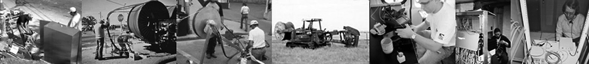
Preparandose Para La Instalación
Una vez finalizado el proceso de diseño de redes de fibra óptica, el siguiente paso es instalarla. ¿Qué entendemos por "proceso de instalación"? Asumiendo que el diseño está terminado, estamos viendo el proceso de instalar físicamente y completar la red, convirtiendo el diseño en un sistema operativo. Este capítulo trata de la preparación para la instalación, los requisitos de formación y seguridad y, a continuación, el proceso de instalación propiamente dicho.
El Papel Del Contratista En Una Instalación
Para empezar a trabajar en una instalación de fibra óptica, el propietario o usuario de la red debe elegir un contratista, quizá la decisión más importante de todo el proceso. El contratista de fibra óptica debe ser capaz de trabajar con el cliente en cada proyecto de instalación a través de seis etapas: diseño, instalación, pruebas, resolución de problemas, documentación y restauración. El contratista debe tener experiencia en instalaciones de fibra óptica del tipo de que se trate y debe poder proporcionar referencias de trabajos similares.
Hay que confiar en que el contratista no sólo se encargue de la instalación, sino que también ayude a diseñar la red y a elegir componentes y proveedores. Una vez que el contratista ha recibido el encargo, debe ser capaz de ayudar al cliente con el diseño, incluida la elección de los tipos adecuados de fibras, cables, conectores y hardware para la instalación. El contratista debe saber qué componentes cumplen las normas del sector para garantizar la interoperabilidad y qué componentes de última generación facilitarán la futura capacidad de ampliación.
El contratista experimentado también debe ser capaz de ayudar en la elección de proveedores. La experiencia con determinados tipos de productos y vendedores permitirá al contratista ayudar al cliente a elegir productos que hagan que la instalación sea más sencilla, más rápida y sencilla y, a menudo, de mayor rendimiento y fiabilidad. Si el cliente elige componentes con los que el contratista no está familiarizado, es importante que éste lo sepa en una fase temprana del proceso para que pueda obtener la formación adecuada, a menudo del fabricante, así como las herramientas exclusivas que puedan ser necesarias.
Por lo general, el cliente no está tan familiarizado con la tecnología y la práctica de la fibra óptica como un contratista experimentado. Es posible que el contratista tenga que discutir con el cliente determinadas opciones cuando considere que otras alternativas pueden ser mejores.
El proceso de instalación real puede implicar algo más que colocar el cable, terminarlo y probarlo. Si el contratista tiene conocimientos y experiencia, el usuario puede pedirle que también compre, reciba, inspeccione y lleve los componentes al lugar de trabajo, lo que puede ser otra buena fuente de ingresos para el contratista. Tener el control total del proceso de los materiales también puede facilitar la vida al contratista, ya que tiene más posibilidades de cumplir los plazos en lugar de depender de un cliente que tiene muchas otras prioridades. Además, pueden elegir componentes con los que estén más familiarizados, lo que facilita el proceso de instalación.
Los técnicos que realicen la instalación deben estar formados y certificados por organizaciones de formación técnica y/o los fabricantes de los productos que se instalen. La certificación ofrece la seguridad de que los técnicos instaladores tienen los conocimientos y la experiencia necesarios para realizar el trabajo.
Los últimos cuatro requisitos del contratista, pruebas, resolución de problemas, documentación y restauración, deben discutirse antes de que comience el proyecto. Todos los proyectos de fibra óptica requieren pruebas de pérdida de inserción de cada enlace con una fuente de luz y un medidor de potencia o un equipo de pruebas de pérdida óptica de acuerdo con las normas del sector. Algunos proyectos, como los enlaces largos de planta externa con empalmes, también pueden requerir pruebas OTDR. El contratista y el cliente deben acordar que las pruebas incluyan la resolución de problemas y su solución, así como la documentación de los resultados de las pruebas de cada enlace.
Del mismo modo, para el contratista, la documentación debe empezar antes de que se inicie el proyecto, de modo que todos conozcan el alcance del trabajo, y terminar sólo cuando se introduzcan los datos finales de las pruebas. Las copias de la documentación, junto con el exceso de componentes sobrantes de la instalación, deben presentarse al cliente para facilitar el futuro restablecimiento de la red, en caso de que sea necesario.
El Contrato
El contrato para una instalación de fibra óptica debe incluir requisitos detallados para el proyecto, indicando exactamente lo que se va a instalar, los resultados aceptables de las pruebas y la documentación que se debe proporcionar. Todo esto debe discutirse entre el cliente y el contratista y acordarse por escrito. Estos no son detalles irrelevantes, ya que son importantes para garantizar que el cliente obtiene lo que espera y que el contratista sabe lo que se espera de él cuando diseñar la red, estimar los costes, realizar la instalación real y proporcionar pruebas de rendimiento para demostrar que el trabajo se ha completado y que debe efectuarse el pago.
Planificación del Proyecto
Una vez firmados los contratos y entregados los planos al contratista, ¿qué hay que hacer? Planificar el trabajo es la primera tarea. Una planificación adecuada es importante para garantizar que la obra se instala correctamente, a tiempo y cumple los objetivos de costes, de modo que el contratista pueda obtener beneficios.
Se supone que tiene un diseño acabado del proyecto, sabe dónde y cómo se instalará todo y tiene listos los requisitos especiales, como los permisos. También cabe suponer que tiene una fecha de finalización, ojalá razonable, en la que trabajar. El primer paso es crear un calendario, que será la pieza central del proceso de planificación.
Para programar un trabajo, se necesita mucha información, gran parte de la cual puede obtenerse de los presupuestos que se hicieron al licitar el trabajo. Cuando los compradores cotizan los componentes que se van a utilizar en un trabajo, deben conocer los plazos de entrega y los precios. Algunos de los elementos utilizados en los proyectos de fibra óptica deben ser de stock, como por ejemplo conectores, paneles de conexión o cierres de empalme. Sin embargo, los cables, sin ambargo, algunos tendrán que ser ordenados a medida.
Muchos cables de fibra óptica se fabrican a medida, en función del tipo de cable, el número y los tipos de fibras y la codificación por colores. Los cables personalizados suelen ser más baratos porque no tienen fibras adicionales para especificaciones que no necesita, por ejemplo, pero tendrán plazos de entrega más largos, ya que deben fabricarse desde cero. Cuando especifique un cable de fibra óptica, intente siempre disponer de algunas fibras adicionales, por si acaso se dañan las fibras durante la instalación.
El contratista astuto intenta utilizar siempre los mismos tipos de componentes en cada trabajo, de modo que conoce no sólo los procedimientos de instalación, sino también los costes típicos, el rendimiento (es decir, el número de conectores o empalmes que pasarán las pruebas a la primera) y cualquier problema que pueda surgir.
Si los instaladores no están familiarizados con algún componente, tendrán que aprender a instalarlo correctamente, ya sea experimentando en la oficina en horas libres o pidiendo a los fabricantes que les formen. La necesidad de formación también puede surgir si se necesitan nuevos tipos de equipos, como herramientas de colocación de cables fuera de la planta o nuevos tipos de equipos de prueba. La regla de oro de la instalación es no llevar nunca al trabajo un componente o una herramienta con los que no se esté familiarizado; es una receta para el desastre.
Los compradores tienen que pedir los componentes cuando se adquiere el trabajo, programando la entrega en el lugar de la obra, bien para tenerlo todo disponible antes de que empiece la instalación, bien, en un trabajo grande con un calendario amplio, en función de lo que vaya a durar la instalación de ese componente. En este caso, también hay que planificar el lugar de entrega de los componentes, ya sea una zona de preparación en el almacén, por ejemplo, o el lugar de la obra.
Los componentes entregados en el lugar de trabajo pueden requerir seguridad. El robo puede ser un problema, con el cable particularmente, ya que algunos ladrones piensan que todos los cables contienen cobre y que el precio del cobre les hace atractivos para el robo. El vandalismo es otro problema, asi que los componentes deben estar bajo llave, o si son demasiado grandes para colocarlos en el interior, como grandes bobinas de cable o conductos internos de fibra óptica, pueden requerir la presencia de vigilantes en sitio durante la noche. Pero el vandalismo es otro motivo de preocupación, que exige que los componentes se guarden bajo llave o, si son demasiado grandes para colocarlos en el interior, como las grandes bobinas de cable o los conductos internos de fibra óptica, pueden requerir guardias nocturnos en sitio.
A continuación, hay que programar la mano de obra. Una vez más, los presupuestos deben indicarle cuántos instaladores de qué experiencia se necesitarán y cuánto tiempo se espera que necesiten para completar la instalación. Si se necesita formación, es posible que haya que añadir más tiempo a la planificación.
Una vez que se han incluido la mano de obra y los materiales en el calendario, la planificación está casi terminada. Revisa el calendario con todos los implicados para que se pongan de acuerdo e inicia los procesos, empezando por la adquisición de materiales. A continuación, añade al plan un repaso de las normas de seguridad para supervisores, instaladores y cualquier persona que se espere que esté en sitio. Añade también notas para guardar todos los restos de cables, conectores, etc. para empaquetarlos y presentarlos al usuario en caso de que se necesiten para futuras restauraciones.
Si la fecha de inicio no es mañana (¡porque el cliente lo quería para ayer!) y tienes otros proyectos entretanto, saca este calendario con regularidad para comprobar si todo va según lo previsto y evitar así sorpresas de última hora.
Planificación de Una Instalación Segura
La seguridad es una parte importante del proceso de planificación de cualquier instalación de fibra óptica. Más adelante en este capítulo, tenemos una sección mas adelante dedicada a "seguridad en el trabajo con fibra óptica" que cubre los aspectos específicos del trabajo con fibra óptica cuando se preparan los cables y se empalman, terminan y prueban. Pero en cualquier instalación hay muchos otros aspectos de seguridad que el instalador debe tener en cuenta.
Las zonas de trabajo para la instalación de OSP suelen estar cerca de carreteras, vías férreas, servicios públicos u otras zonas con peligros potenciales. La excavación de zanjas o la perforación direccional requieren conocer la ubicación de los servicios públicos subterráneos y confirmar su localización antes de la excavación final. Las instalaciones en predios suelen requerir trabajar cerca de cables eléctricos y otros servicios interiores, así como de trabajadores que puedan estar en un edificio durante la instalación.
Se espera que el instalador conozca y cumpla todas las leyes, códigos y requisitos locales para instalaciones seguras, como los de organismos como OSHA en EE.UU.. Los trabajadores también deben recibir formación sobre estas prácticas. En los lugares de trabajo deben estar expuestas las normas de seguridad, incluido el equipo de seguridad que deben llevar los trabajadores, y los supervisores deben vigilar el lugar para asegurarse de que se cumplen estas normas.
Lista de Comprobación De La Instalación
La planificación de la instalación es una fase crítica de cualquier proyecto, ya que implica coordinar las actividades de muchas personas y empresas. La mejor manera de tenerlo todo claro es elaborar una lista de comprobación basada en el diseño. En la lista de comprobación que figura a continuación es exhaustiva, pero cada proyecto tendrá algunos requisitos propios que habrá que añadir a la lista.
Lista de comprobación previa a la instalación:
- Punto de contacto principal/director de proyecto elegido
- Requisitos de las comunicaciones de enlace
- Establecimiento de los requisitos de equipos y componentes y elección de los proveedores
- Ruta de enlace elegida, permisos obtenidos
- Elección de los componentes y proveedores de la planta de cables
- Coordinación con instalaciones y personal eléctrico completa
- Documentación finalizada y lista para la instalación, preliminar
planes de restauración listos
- Plan de pruebas completo
- Calendario y fecha de inicio de la instalación, notificación a todas las partes
- Se piden los componentes y se fija la fecha de entrega, se planifica la recepción de los materiales (hora, lugar), se organiza la seguridad si se dejan en el exterior o en la obra.
- Elección del contratista/instalador y fijación de la fecha de inicio
- Enlazar el recorrido de la ruta con el/los contratista(s)
- Revisión de los planes de construcción con los contratistas
- Revisión de los componentes elegidos con los contratistas
- Cronograma revisado con los contratistas
- Revisión de las normas de seguridad con los contratistas
- Revisión con los contratistas de los materiales sobrantes que se guardan para la restauración
- Revisión del plan de pruebas con los contratistas
Antes de comenzar la instalación:
- Todos los permisos disponibles para inspección
- Emplazamientos preparados, electricidad disponible
- Todos los componentes en sitio, inspeccionados, seguridad las 24 horas del día organizada si
necesario
- Contratista disponible
- Notificación al personal pertinente
- Normas de seguridad publicadas en el lugar o lugares de trabajo y revisadas con todos los supervisores.
y personal de instalación
Durante la instalación:
- Inspeccionar la mano de obra en cada paso
- Revisión diaria del proceso, el progreso y los datos de las pruebas
- Notificación y solución inmediatas de problemas, carencias, etc.
Una vez finalizada la instalación de la planta de cables:
- Inspeccionar la mano de obra
- Revisión de los datos de prueba de la planta de cables
- Configurar y probar el sistema de comunicaciones
- Actualizar y completar la documentación
- Actualizar y completar el plan de restauración
- Almacene el plan de restauración, la documentación, los componentes, etc.
Preparativos Para La Instalación De Fibra Óptica En Predios
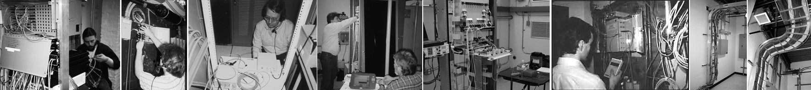
Antes de comenzar la instalación de cables y hardware de fibra óptica en una instalación de predios, el emplazamiento debe estar debidamente preparado para la instalación de cables, hardware y equipos de transmisión de fibra óptica. Durante las fases de diseño y planificación, se debería haber inspeccionado el emplazamiento e incluido en el diseño todo el hardware necesario para la instalación de cables.
Estructuras de Fijación en Predios
Existen numerosas estructuras utilizadas para fijar el cable de fibra óptica en las instalaciones en predios, lo que dificulta las generalizaciones. Los cables pueden colgarse de perchas adecuadas, colocarse en bandejas de cables o introducirse en conductos o conductos internos. La terminación de los cables puede realizarse en bastidores en salas de telecomunicaciones, en cajas montadas en la pared o incluso en tomas de pared. La preparación de una instalación incluye la planificación del almacenamiento de los bucles de servicio de cables detrás de los bastidores, como se muestra aquí.
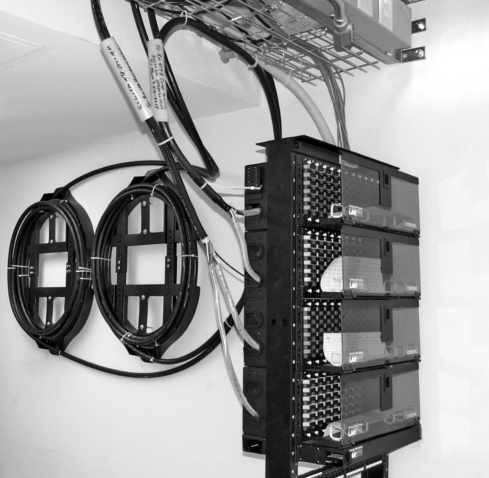
Debe instalar estructuras de soporte para instalaciones de cable de fibra óptica antes de la instalación del propio cable de fibra óptica. Estas estructuras deben seguir las directrices de las normas apropiadas, como TIA/EIA 569-A y NECA/ BICSI 568-2001. Tenga en cuenta el crecimiento futuro de la cantidad y el tamaño de los cables a la hora de determinar el tamaño de las vías. Cumpla todos los requisitos de radio de curvatura de los cables y evite, en la medida de lo posible, tirar de los cables alrededor de peligros.
A veces pueden tenderse cables nuevos en bandejas de cables existentes. No instale un cable de fibra óptica en un conducto o canalización que ya contenga cableado, independientemente del tipo de cable, para evitar daños. Los conductos vacíos existentes o nuevos pueden modificarse para aceptar varias instalaciones diferentes mediante la colocación adecuada del conducto interior.
Las estructuras de soporte de predios también incluyen paneles de conexión para las terminaciones. Pueden ser murales o en bastidor y deben elegirse en función del tipo de cable utilizado. Los cables terminados simplex o zipcord pueden terminarse en paneles abiertos, pero las fibras tupidas de 900 micrones de los cables de distribución requieren paneles de terminación cerrados para su protección. Si es posible, el diseño de las estructuras de soporte debe ser tal que se proporcione un espacio adecuado para la terminación de los cables y el almacenamiento de los bucles de servicio.
Detención de Incendios
El cableado de las instalaciones requiere la protección contra incendios en todas las penetraciones de paredes y suelos. Los cortafuegos de telecomunicaciones deben cumplir siempre los códigos y normas aplicables. Todas las penetraciones deben protegerse con cortafuegos homologados.
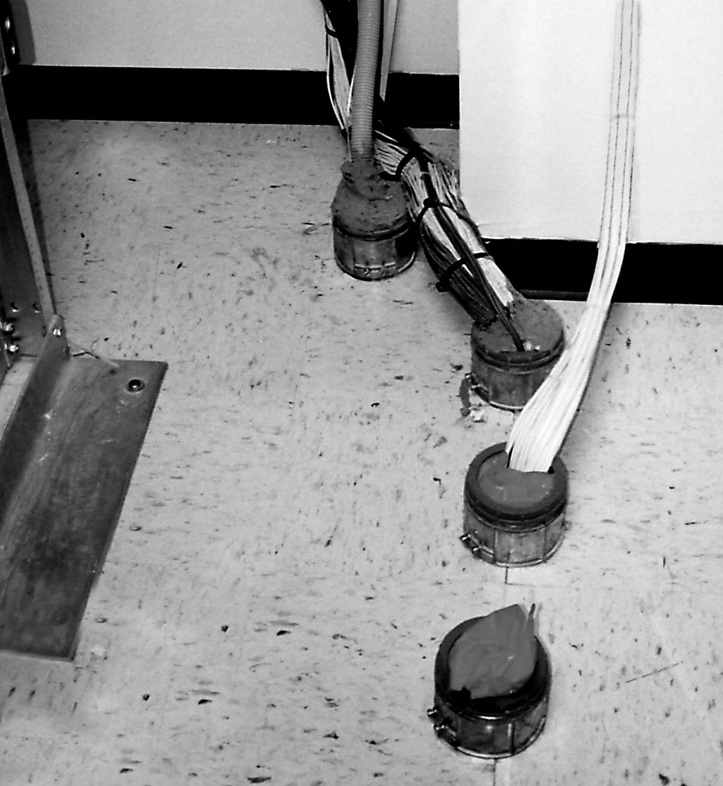
En la mayoría de las zonas, la rotura de una separación contra incendios requerirá una supervisión física hasta que se haya reparado. Consulte con la "Autoridad competente" los requisitos específicos del proyecto antes de iniciar los trabajos.
Sistemas Eléctricos
Todos los equipos de fibra óptica necesitarán una alimentación eléctrica adecuada en las ubicaciones de los equipos. La alimentación debe ser de alta calidad, estar protegida contra sobrevoltajes y picos de voltaje y, en general, debe tener una capacidad de reserva adecuada para evitar la pérdida de comunicaciones en caso de corte del suministro eléctrico. Los equipos de datos necesitarán una toma de tierra independiente y una alimentación adecuada para el aire acondicionado durante todo el año. Debe considerarse la eficiencia en la refrigeración para reducir el consumo de energía.
Consultar con el propietario del emplazamiento, el cliente y el personal apropiado del usuario para planificar la instalación de energía eléctrica.
Puesta a Tierra y Conexión
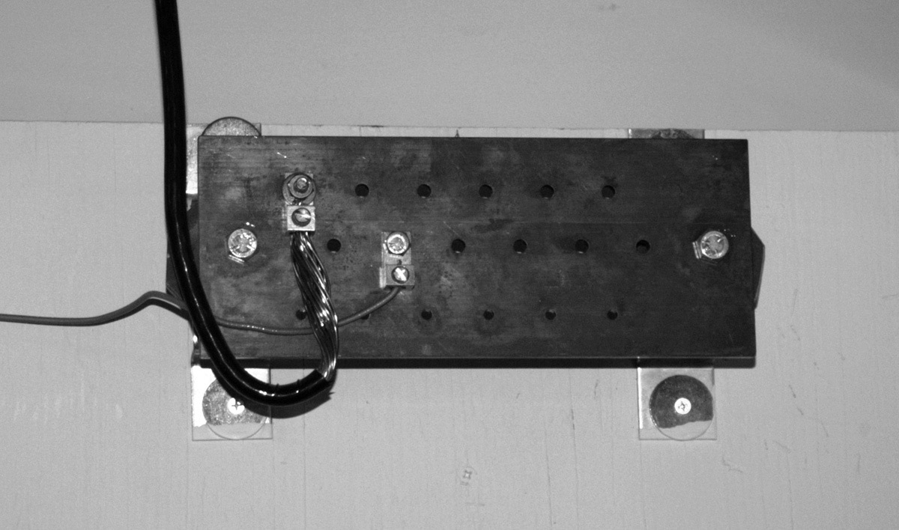
Todos los cables y componentes conductores deben estar conectados a tierra. Los sistemas de conexión a tierra deben diseñarse según lo especificado por NEC u otros códigos y normas aplicables. Aunque la mayoría de los cables de fibra óptica no son conductores, todo el hardware metálico utilizado en los sistemas de cableado de fibra óptica (como las cajas de terminación montadas en la pared, los bastidores y los paneles de conexión) debe estar conectado a tierra. Todos los cables conductores requieren una conexión a tierra y una unión adecuadas para los conductores aplicables.
Marcado e Identificación de Cables
Los cables de fibra óptica deben especificarse con cubiertas de color según las normas del sector que identifiquen los cables como cables de fibra óptica e indiquen el tipo de fibra del cable. Todas las terminaciones de los cables de fibra óptica deben marcarse en los bastidores o cajas donde terminan los cables. Los cables deben llevar una etiqueta que indique que son cables de fibra óptica y que es necesario manipularlos adecuadamente.
Debe prestarse especial atención a las actualizaciones del cableado en predios. Durante casi dos décadas, la fibra multimodo de 62.5/125 micrones ha sido la principal fibra para el cableado local. Con la aparición de las redes gigabit, la fibra 50/125 optimizada para láser se ha hecho más popular. La mezcla de ambas fibras puede resultar en pérdidas excesivas en las conexiones que pueden hacer que los sistemas no funcionen correctamente. Siempre que sea posible, deben utilizarse códigos de colores, marcas e incluso conectores incompatibles (SC o ST en fibra 62.5/125 y LC en fibra 50/125).
Retirada de Cables Abandonados
A menos que el propietario u otro organismo indique que los cables no utilizados se reserven para un uso futuro y que los cables estén marcados en consecuencia, puede ser necesario retirar el cable de fibra óptica abandonado (cable que no está terminado en un equipo que no sea un conector y que no está identificado para un uso futuro con una etiqueta), tal como lo exige el Código Eléctrico Nacional o los códigos locales.
A discreción del propietario de la obra, puede solicitarse al contratista que retire además otros cables (por ejemplo, cables de cobre de comunicaciones o eléctricos). La retirada de cables requiere mucho más tiempo que la instalación, ya que cada cable debe ser identificado y retirado cuidadosamente para evitar dañar otros cables. No se debe cortar ningún cable para retirarlo a menos que se identifique positivamente como uno de los que hay que retirar.
Todos los cables retirados deben reciclarse adecuadamente. La mayoría de los cables de comunicaciones tienen un importante valor como chatarra, no sólo los conductores de cobre, sino también otros elementos metálicos e incluso algunos plásticos.
Preparativos Para las Instalaciones de Planta Externa
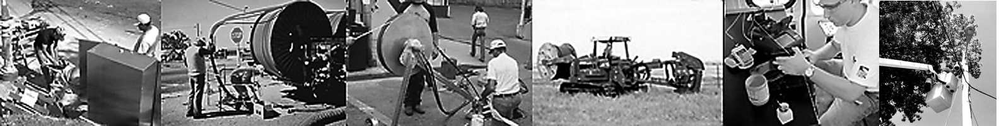
Las instalaciones de cables de fibra óptica en plantas externas (OSP) pueden ser mucho más diversas que las instalaciones para predios. Las instalaciones OSP pueden incluir la instalación de cable aéreo, cable enterrado directamente, cable subterráneo en conducto o la instalación de conducto o conducto interno y luego tirar del cable, o la colocación de cable bajo el agua. Un mismo enlace puede incluir varios tipos de instalación, por ejemplo aérea en un tramo, tirando en conducto en el cruce de un puente y enterrando el resto del cable.
Los cables pueden terminar cuando se introducen en los edificios o terminan en la parte superior de los postes donde se ubican las cámaras de vigilancia o los puntos de acceso inalámbricos. Los empalmes donde se concatenan los cables pueden colocarse en pedestales, enterrarse bajo tierra o colgarse en cierres de empalme aéreos.
La diversidad de la instalación OSP hace que sea extremadamente importante que el contratista conozca íntimamente el trazado del cable que va a instalar. Como el estimador que debe recorrer la ruta antes de iniciar el proceso de estimación, el contratista necesita ver por sí mismo las situaciones reales con las que se va a encontrar. Esa inspección les permite determinar qué problemas pueden encontrarse, qué equipos especiales pueden ser necesarios e incluso comprobar que todos los permisos necesarios están en regla. Los tiros largos de cables en conductos pueden requerir lubricantes o tiros intermedios en los que su
los instaladores deben saber cómo "figurar en 8" el cable para evitar que se retuerza, un procedimiento que se describe más adelante en este capítulo.
Llame Antes de Excavar
La vieja historia de que el fallo más probable de un sistema de comunicaciones de fibra óptica es el causado por el "desvanecimiento de la retroexcavadora" no es una broma: ocurre todos los días. Pero nos recuerda que excavar con seguridad es de vital importancia. El riesgo no es solo interrumpir las comunicaciones, sino poner en peligro la vida de las personas al desenterrar cables de alta tensión o tuberías de gas. Hay varios servicios que mantienen bases de datos con la ubicación de los servicios subterráneos con los que hay que ponerse en contacto antes de excavar.
fase de diseño y se vuelven a comprobar antes de excavar para garantizar que se dispone de los últimos datos.
Al mismo tiempo que se instala el cable, también pueden instalarse marcadores como estos que indican su ubicación y propiedad.
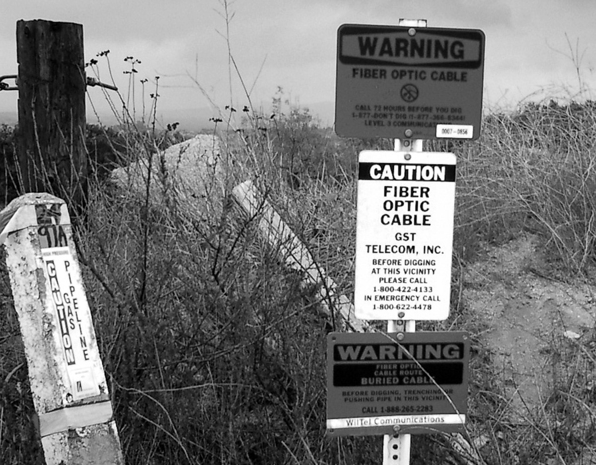
Tendido y Colocación de Cable
Las instalaciones de OSP se dividen en cuatro grandes categorías: subterráneas, enterradas directamente, aéreas y submarinas.
Cables Subterráneos
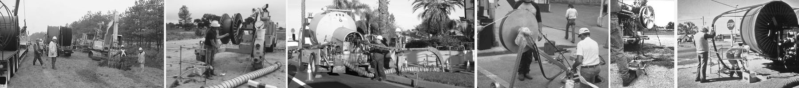
Los cables subterráneos se tienden en conductos enterrados bajo tierra, normalmente a 1-1,2 metros de profundidad para reducir la posibilidad de que se desentierren accidentalmente. El proceso suele comenzar con la excavación de una zanja para enterrar el conducto, que suele ser un tubo de plástico de 4 pulgadas, a veces con un conducto interior preinstalado (también llamado revestimiento de conducto) con una cinta de tracción para facilitar el proceso de tracción del cable. La perforación direccional también puede utilizarse para evitar excavar la superficie, por ejemplo al cruzar calles o aceras. Si el conducto y los cables son dieléctricos, puede enterrarse una cinta marcadora conductora a unos 30 cm por encima del conducto para ayudar a localizar el cable en el futuro y como advertencia a cualquiera que excave cerca del cable.
Debido a la naturaleza perturbadora del soterramiento de conductos, especialmente bajo calzadas, muchos gobiernos que conceden permisos para soterrar cables exigen al contratista que instale conductos adicionales a lo largo de la ruta para evitar tener que volver a excavar en futuras instalaciones de cables. Dado que muchas ciudades ya disponen de una gran cantidad de conductos enterrados para otros servicios o pueden haber exigido el enterramiento de conductos adicionales durante instalaciones anteriores, es posible que haya conductos disponibles para tender nuevos cables de fibra óptica.
El conducto interior del tubo separa los cables y facilita su tracción. Los tubos pueden adquirirse con los conductos interiores instalados y, por lo general, también con cintas de tracción. Si el conducto interno no tiene una cinta de tracción instalada, se puede soplar una línea a través del conducto para tirar de una cinta o línea de tracción más fuerte.
A menos que se instalen sub-conductos interiores en un conducto, sólo se puede instalar un cable en el conducto a menos que se tire de todos los cables juntos. Introducir un cable en un conducto que ya contiene varios cables puede provocar enredos, aumentar la tensión de tracción y dañar los cables. Se puede tirar de varios cables a la vez si el llenado total del cable y la tensión de tracción no superan las recomendaciones.
Existen varios tipos de conductos internos o revestimientos de conductos, incluidos los tubos flexibles con interiores ondulados o lisos. Los tubos ondulados con revestimientos lisos tienden más a aplanarse, lo que limita el tamaño del cable, mientras que los interiores ondulados pueden ser más frágiles. Un nuevo tipo de revestimiento para conductos es más parecido a una funda de tela que queda plana hasta que se tira del cable a través de ella, y ocupa menos espacio en el cable que los conductos interiores rígidos, lo que permite dejar espacio para más cables.
La longitud de cable que se puede tirar dependerá de muchos factores, como el tipo de cable, el conducto o conducto interior, la temperatura y la rectitud del recorrido, que afectan al coeficiente de fricción. Excepto en tiradas cortas, los cables deben lubricarse para reducir la fricción que aumenta la tensión de tracción. Lubricantes deben ser de un tipo aprobado por el fabricante del cable, no lubricantes para cables eléctricos o de comunicación de cobre, y aplicados según el fabricante del lubricante y/o del cable. Algunos fabricantes de lubricantes ofrecen calculadoras en línea que le ayudarán a elegir y utilizar los lubricantes.
La mayoría de los cables sólo se pueden tensar de forma segura fijando una argolla de tracción giratoria a los elementos de resistencia del cable. Los eslabones giratorios son importantes para reducir las cargas de torsión en el cable. Para cargas de alta tensión, se utiliza un eslabón giratorio de ruptura para evitar daños si la tensión de tracción supera la especificación del cable. Algunos cables están clasificados para ser tirados por la cubierta si se trata de un agarre de malla de alambre flexible, comúnmente llamado agarre Kellems. También se suelen fijar a los elementos de resistencia del cable. Más adelante en este capítulo se dan instrucciones para fijar las argollas de tracción.
La tensión de los cables de tracción suele ser lo suficientemente alta como para que se necesite un cabrestante motorizado, probablemente para todas las tracciones excepto las más cortas. El cabrestante debe estar equipado con un monitor que pueda detener la tracción si se supera una tensión preestablecida. Si la tensión es demasiado alta, hay que encontrar la causa del exceso de fricción y solucionarla.
Como en cualquier instalación de cables, es importante no doblar el cable con demasiada fuerza, ya que podría dañar el cable o sus fibras. Las directrices estándar para los cables son un radio de curvatura mínimo de 20 veces el diámetro del cable bajo tensión y de 10 veces el diámetro del cable una vez eliminada la tensión de tracción. Después de tirar del cable, es posible que aún quede algo de tensión en algunos puntos, pero si se lubrica adecuadamente y se tira con cuidado, debería ser mínima.
Los cables se pueden tirar completamente desde un extremo si la longitud es lo suficientemente corta y no hay ubicaciones intermedias, como arquetas o bóvedas, por las que se deba tirar del cable, sin empalmarlo en ese lugar. Existen dispositivos que ayudan en la mitad del tramo y permiten sacar el cable de un conducto y meterlo en otro en algunos lugares, o bien se puede tirar del cable hasta el lugar, colocarlo en el suelo en forma de 8 para evitar que se retuerza y luego pasarlo por la siguiente sección.
Alternativamente, el cable puede ser tirado en una dirección desde un punto intermedio, el cable restante virgen en un patrón de figura 8, el volteado y tirado en la otra dirección. Véase la sección sobre tirones de cable en forma de 8 más adelante en este capítulo. En ocasiones, los cables pueden instalarse soplando tipos especiales de cables en conductos denominados líneas de conductos, microconductos o sub-conductos que se han instalado en conductos más grandes o incluso tuberías para transportar agua, aguas residuales o gas. El aire comprimido a alta presión proporciona un efecto aerodinámico, haciendo flotar el cable en la corriente de aire y transportándolo por el conducto, lo que permite longitudes de instalación de hasta 2 km (6,500 pies).
En los extremos de los cables en los que sea necesario realizar empalmes o terminaciones, debe dejarse un cable adicional de 10 a 20 metros (30 a 60 pies) para realizar los empalmes. La mayoría de los empalmes se realizarán en un remolque o tienda de campaña sobre el terreno y se necesitará cable adicional para llegar al lugar del empalme y disponer de longitud extra para pelar para el empalme. Antes de comenzar la instalación, compruebe las instrucciones del cierre de empalme para conocer las longitudes de cable necesarias para el empalme o la entrada a mitad del tramo. Deje siempre una longitud extra para cortar la argolla de tiro desde el extremo de tracción.
Como en cualquier instalación de cableado, el trabajo debe realizarse de forma ordenada y profesional. Los cables deben fijarse y asegurarse cuidadosamente en los lugares adecuados de las arquetas o cámaras, utilizando bridas, pero sin apretarlas demasiado, ya que podrían causar problemas con el cable o las fibras. Los bucles de servicio también deben anclarse cuidadosamente en su lugar. En las ubicaciones intermedias, es muy importante colocar etiquetas de identificación en los cables de fibra óptica para facilitar su identificación y evitar daños en el futuro si el cable se confunde con otro que se va a cortar y retirar.
Los cables terminados en para predios deben instalarse de forma ordenada. Deben utilizarse conductos o bandejas de cables para protegerlos. La mayoría de los códigos de edificación, incendios o electricidad limitan la distancia del cable OSP que puede tenderse en interiores, a menos que el cable esté en un conducto, por lo que la instalación correcta del cable incluye el cumplimiento de los códigos de construcción apropiados.
Cables Enterrados
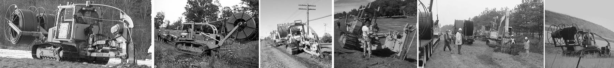
Si la geografía lo permite, los cables de fibra óptica de los tipos adecuados pueden enterrarse directamente en el suelo mediante arado directo, perforación direccional o zanjeo y colocación del cable en la zanja. Cuando el terreno es blando y relativamente libre de rocas y el terreno es llano y no tiene obstáculos para el movimiento de equipos pesados, el enterramiento directo es un método rápido de instalación, que permite instalar varios kilómetros de cables en un día. En zonas más urbanizadas, puede ser más fácil abrir zanjas porque para arar se necesita maquinaria grande y mucho espacio.
Los cables de alta resistencia se pueden enterrar directamente o se pueden instalar cables en conductos para mayor protección utilizando técnicas de enterrado directo. Los cables pueden suministrarse ya en conductos para su enterramiento. Una técnica alternativa consiste en enterrar los conductos y soplar los cables en ellos, como se hace en las instalaciones subterráneas.
En la mayoría de las zonas, los cables troncales suelen instalarse a 1-1.2 m (3-4 pies) de profundidad, pero en zonas residenciales o urbanas, los cables pueden enterrarse a solo 0.6 m (2 pies) de profundidad. Algunos cables se pueden instalar directamente en las ranuras serradas en las carreteras, pero estos están enterrados solo unos pocos centímetros, aún dentro del material de la carretera, y se llenan con sellador. Si el cable es totalmente dieléctrico, se puede enterrar una cinta marcadora conductora a unos 30 cm por encima del conducto para ayudar a localizar el cable en el futuro y como advertencia a cualquier persona que excave en las proximidades del cable.
El arado de cables puede realizarse con arados estáticos grandes o arados vibratorios más pequeños, pero deben ser arados aptos para tirar cables de fibra óptica. Los arados para cables de cobre pueden no cumplir los requisitos de la fibra en cuanto a soporte de cables, radio de curvatura, tensión o vibración. A veces, el arado de los cables va seguido de una operación de rasgado donde que se realiza un arado preliminar para preparar el terreno y encontrar obstáculos subterráneos.
El arado con cable requiere una alimentación cuidadosa del cable en la canaleta del arado para reducir la tensión. En muchos arados se utiliza un cabrestante de alimentación para sincronizar la alimentación del cable. El carrete de cable y la canaleta de alimentación también deben estar aislados de las vibraciones.
Arar cables de fibra óptica es un proceso que exige cuidado y experiencia. Ni que decir tiene que el operario y el equipo de arado deben saber lo que hacen y actuar con gran precaución. El personal sin experiencia debe trabajar con un equipo experimentado para aprender los procedimientos adecuados.
El zanjeado consiste en cavar una zanja con una retroexcavadora o zanjadora, tender el cable y rellenar la zanja. Hay zanjadoras de todos los tamaños y no necesitan un equipo específico de fibra, a diferencia de los arados. El contratista necesita tener cuidado con los objetos punzantes o las rocas en la zanja o el relleno, ya que pueden dañar el cable. Si el terreno es rocoso, enterrar el cable en arena antes de rellenar la zanja proporcionará protección.
Los cables también pueden enterrarse mediante perforación direccional, un método que suele preferirse cuando se cruzan carreteras o cursos de agua poco profundos, ya que no requiere excavar la superficie. El tamaño y la distancia de la perforación están relacionados, ya que las perforaciones más grandes no se pueden hacer en una longitud tan larga, y ambos pueden estar determinados por el tipo de suelo encontrado. La perforación direccional también requiere un conocimiento exacto de otros servicios enterrados para evitar dañarlos durante el proceso de perforación.
Los cables enterrados pueden empalmarse en cierres enterrados a lo largo del recorrido del cable o colocados sobre el suelo en un pedestal. En los extremos de los cables en los que sea necesario realizar empalmes o terminaciones, debe dejarse una distancia adecuada de cable, normalmente 10-20 metros (30-60 pies) adicionales de cable para realizar empalmes en un remolque o tienda en el suelo. Antes de comenzar la instalación, compruebe las instrucciones de cierre de empalmes para conocer las distancias de cable necesarias para el empalme o la entrada a mitad del tramo. Deje siempre una distancia extra para cortar la argolla de tracción desde el extremo de tracción.
Como en cualquier instalación de cableado, el trabajo debe realizarse de forma ordenada y profesional. Los cables deben tensionarse cuidadosamente en los lugares adecuados de las arquetas o cámaras, utilizando bridas, pero sin apretarlas demasiado, ya que podrían causar problemas con el cable o las fibras. Los bucles de servicio también deben anclarse cuidadosamente en su lugar. En las ubicaciones intermedias, es muy importante colocar etiquetas de identificación en los cables de fibra óptica para facilitar su identificación y evitar daños en el futuro si el cable se confunde con otro que se va a cortar y retirar.
Los cables terminados en el interior de las instalaciones deben instalarse de forma ordenada. Deben utilizarse conductos o bandejas de cables para protegerlos. La mayoría de los códigos de edificación, incendios o electricidad limitan la distancia que el cable OSP puede instalarse en interiores a menos que el cable esté en un conducto, por lo que la instalación correcta del cable incluye el cumplimiento de los códigos de construcción apropiados.
Instalación de Cables Soplados
El cable soplado es un método de instalación de cables pequeños (microcables) en microconductos mediante aire comprimido y una máquina que empuja el cable hacia el interior del conducto. En realidad, los cables no se introducen por soplado en el conducto, sino que el aire soplado hace flotar el cable en el conducto y reduce la fricción para que la máquina pueda empujar el cable dentro del conducto. Los microductos se instalan como conductos, conductos internos o cables y los cables se instalan después.
Este método funciona bien tanto en instalaciones OSP, a menudo con microzanjas para instalar los conductos, como en instalaciones de interior en las que el conducto se instala en bandejas de cables. Con los micro-cables actuales, es fácil instalar cables con un gran número de fibras de esta forma, ya que un cable de fibra de 144 mm típico mide solo 8 mm (0.3 pulgadas) de diámetro. Incluso se pueden instalar conductos especiales que permitan soplar sólo fibras, no cables, aunque eso no es tan popular.
Cables Aéreos
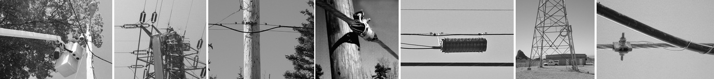
En muchas zonas, los cables siguen instalados en postes de servicios públicos. Los cables aéreos están sometidos a una tensión continua, así como a una tensión adicional provocada por los cambios de temperatura, el viento y, en algunas zonas, el peso del hielo. La mayoría de los cables de fibra óptica no tienen la resistencia suficiente para permitir una instalación aérea directa, pero existen métodos para instalarlos de forma aérea, así como cables especiales diseñados para la instalación aérea.
La solución más sencilla es amarrar un cable OSP normal a un cable mensajero, normalmente un cable trenzado metálico utilizado para soportar el cable, pero a veces otro cable si tiene la resistencia adecuada. Las instalaciones de CATV a veces amarran cables de fibra a cables coaxiales existentes e incluso los cables de alimentación pueden tener cables de fibra óptica amarrados a ellos. El mensajero debe seleccionarse de forma que tenga la resistencia adecuada para soportar el cable de fibra óptica durante el tramo entre las estructuras de soporte. Cuando se instalan cables de fibra óptica con un conductor, hay que tener cuidado de que no se produzcan variaciones de distancia en el conductor, por ejemplo, debido al estiramiento con el viento o a los cambios de temperatura. Dado que los cables de fibra óptica están diseñados para no estirarse, ya que esto tensaría las fibras ópticas, debe preverse una holgura, normalmente en los soportes, para reducir la tensión en el cable de fibra óptica cuando cambia la distancia del mensajero. El Código Nacional de Seguridad Eléctrica y RUS proporcionan directrices para el diseño de la estructura de soporte, pero siempre se debe consultar a los fabricantes sobre los métodos de soporte adecuados para los cables que se elijan para la instalación aérea.
La primera etapa de una instalación aérea trenzada es la instalación del cable mensajero de soporte. Normalmente, el cable se colocará en el suelo a lo largo del tramo, se tirará hacia los postes mediante poleas, luego se ajustará la tensión y se fijará firmemente el mensajero. El amarre del cable de fibra óptica al mensajero debe hacerse por separado en cada tramo de la instalación del cable. El cable de fibra óptica puede tirarse sobre anillos de soporte temporales y tensarse o, alternativamente, tenderse a lo largo del suelo bajo el mensajero y utilizarse una guía aérea delante de la trinca para colocar el cable junto al mensajero para su trinca. Algunos métodos también utilizan un camión que tiende el cable y tira de la máquina de tensar.
Los cables con mensajeros incorporados, denominados cables en forma de 8 (no confundir con el proceso de enrollado de cables en el suelo denominado "figura 8"), pueden instalarse directamente, ya que la estructura de soporte está incorporada en el cable. El cable se sujeta con abrazaderas al elemento de resistencia del cable de forma similar a la instalación de un cordón mensajero. También se puede comprar un conducto aéreo, un pequeño conducto de fibra con un mensajero unido como un cable en forma de 8 y luego se puede introducir un cable de fibra óptica OSP en el conducto.
También existe una categoría de cables autosoportados totalmente dieléctricos (ADSS) que están diseñados con más elementos de resistencia y una cubierta más gruesa para tener la resistencia adecuada para soportar los rigores de la instalación aérea cuando se instalan con herrajes especiales diseñados para sujetar el cable a la cubierta de forma adecuada sin causar daños al cable durante cargas de alta tensión a largo plazo. Como cada fabricante suele tener sus propios herrajes y procedimientos, debe consultárseles durante la fase de diseño para conocer los procedimientos adecuados de diseño y colocación de la planta de cables.
Los cables ADSS tienen dos tipos de soportes: los extremos o callejones sin salida, en los que el cable se sujeta contra la tensión causada por el cable instalado, y los pasantes, en los que el cable puede fijarse a un poste pero puede moverse dentro del conjunto. Los extremos no significan el final del cable de fibra óptica, sino un lugar donde el cable se mantiene firmemente bajo tensión. En un poste, se pueden utilizar dos extremos para cambiar la dirección de un cable, proporcionar holgura para tensar o permitir que los extremos se acerquen al suelo para empalmar. El tensado puede realizarse con un polipasto de cadena con calibrador para ajustar la tensión.
Otro tipo de cable aéreo es el cable de tierra de energía óptica (OPGW.) El OPGW es un conductor de alta tensión con un tubo herméticamente sellado en el centro que contiene fibras ópticas. Este cable se utiliza ampliamente en todo el mundo para proporcionar comunicaciones, así como energía. El OPGW se instala de la misma manera que el cable de alta tensión, pero los extremos se llevan al suelo y se empalman o terminan, y luego se enrollan en la torre. Si se necesitan equipos de comunicaciones en ese lugar, los cables de fibra óptica se llevan desde los empalmes hasta la torre hasta una instalación local que albergue el equipo. La instalación de OPGW debe dejarse en manos de personal experimentado de la empresa de servicios públicos, excepto en el caso del empalme, que puede ser realizado por personal de instalación de fibra.
En todas las instalaciones de cable aéreo que requieran empalmes o terminaciones, debe dejarse un cable adicional de 10 a 20 metros (30 a 60 pies) para los empalmes. Puede ser necesario incluso más si el empalme se realiza en el suelo en cables instalados en postes altos.
Cuando se instala cableado aéreo, es muy importante una planificación cuidadosa. Trabajar a gran altura puede ser peligroso y trabajar en postes puede significar trabajar cerca de líneas eléctricas. Si es posible, procure que se apaguen los cables de alimentación de energía antes de instalar cualquier otro cable en los postes de servicios públicos. Tenga especial cuidado al instalar soportes metálicos para cables de fibra; los cables de fibra pueden no ser conductores, pero los soportes sí. Instale los cables más largos que pueda para reducir el número de puntos de empalme. Disponga en el lugar de trabajo del equipo adecuado y de un número suficiente de personal debidamente formado y, si es posible, de las autoridades locales que puedan ser responsables de la instalación en su propiedad.
Cableado Submarino
A veces es necesario instalar cables de fibra óptica bajo el agua. Los más conocidos son probablemente los cables transoceánicos que proporcionan comunicaciones mundiales de telecomunicaciones e Internet. La instalación de estos cables es un proceso muy especializado que requiere diseños de cable especiales y buques cableros a medida para desembarcar el cable en trayectos de miles de kilómetros y colocarlo en el fondo del océano a grandes profundidades. Estas aplicaciones, aunque interesantes, quedan fuera del alcance de este libro.
Otras instalaciones submarinas implican cruces de ríos o lagos en los que resulta más rentable tender el cable de fibra bajo el agua que dar un rodeo, colocar el cable en un conducto amarrado a puentes u otras estructuras o tender el cable por el aire. Los cruces submarinos pueden requerir permisos especiales debido a la jurisdicción de diversos grupos ecologistas.
Cuando los cables se tienden bajo el agua, siempre existe el peligro de que se enganchen. En aguas relativamente poco profundas, el cable debe enterrarse, si es posible, varios metros bajo el fondo del río o lago. Para aguas más profundas, se deben utilizar cables blindados especiales con una o más capas de armadura de alambre para evitar daños en el cable si se engancha. Debido a las carcasas de empalme especializadas necesarias para los cables submarinos, tender un único tramo a través del agua será mucho más fácil y menos costoso.
La instalación subacuática también conlleva sus propios riesgos de seguridad. Es posible que se necesiten buceadores experimentados para ayudar a colocar el cable y solucionar problemas.
Hardware y Equipos
Las instalaciones OSP pueden requerir la instalación de estructuras de soporte antes de que pueda comenzar la instalación del cable. Es posible que haya que enterrar nuevos conductos o conductos interiores, o que haya que revisar los conductos ya instalados, retirar los cables viejos e instalar nuevos conductos interiores. Algunos cables enterrados pueden incluso requerir la instalación de pedestales, arquetas o cámaras de ambiente controlado para los equipos, así como para los conductos.
El contratista no sólo debe tener en cuenta todo el material que puede ser necesario instalar, sino que debe programar el equipo especializado necesario: zanjadoras o arados de cable, retroexcavadoras, camiones cazo, cabrestantes de cable, etc., y asegurarse de que el personal está bien formado en su uso.
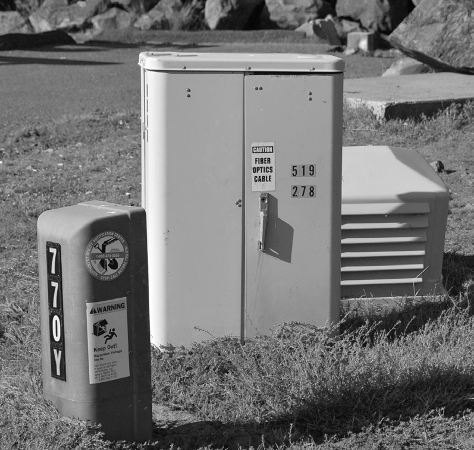
Empalme de Cables
Una vez instalada la infraestructura y colocado el cable, comienza el trabajo de empalme de la fibra óptica. Ahora lo que hay que programar es la disponibilidad del equipo de fibra óptica adecuado. Si el cable se va a empalmar en el exterior, normalmente se utiliza un remolque de empalme, a menos que los empalmes se vayan a realizar en un poste o en un cubo, donde puede ser necesaria una tienda de campaña en caso de mal tiempo.
Es necesario preparar el cable para el proceso de empalme. Esto implica procesos apropiados para el tipo de cable que se va a instalar, pero normalmente incluye la retirada de la cubierta del cable, la exposición de las distancia adecuadas de tubos de amortiguación para conectarlas a las bandejas de empalme, el recorte de los elementos de resistencia para unirlos al cierre del empalme y la limpieza de todo el gel o polvo que bloquea el agua. Por último, se exponen y limpian las distancias adecuadas de fibra para el empalme.
Se debe tener cuidado para asegurarse de que cada fibra se coloca cuidadosamente en el cierre de empalme para evitar daños, especialmente si el cierre debe volver a introducirse en el futuro y el cierre debe sellarse cuidadosamente para evitar degradación a largo plazo. Y, como siempre advertimos a los empalmadores, una cuidadosa marca de identificación en el interior del cierre facilita enormemente la identificación de las fibras en caso de que un problema posterior requiera un nuevo empalme.
Cada empalme debe verificarse con una prueba OTDR. Las pruebas se realizan preferiblemente a medida que se realiza cada empalme y se coloca en la bandeja de empalme, por lo que, para ser eficientes, un empalmador estará en el lugar de trabajo y un técnico de pruebas estará trabajando en el otro extremo del cable con un OTDR para verificar cada empalme. Las máquinas de empalme dan una estimación de la pérdida de empalme, pero es sólo eso, y volver más tarde, abrir un cierre de empalme y volver a empalmar es una propuesta cara.
Entrada Midspan
A veces es necesario empalmar cables de gran cantidad de fibras con cables más pequeños en un lugar que no sea el extremo del cable más grande. En lugar de cortar el cable y empalmar todas las fibras, se puede utilizar una entrada intermedia para acceder sólo a las fibras necesarias para el empalme con el cable o cables más pequeños. Para realizar una entrada intermedia, es necesario conocer las recomendaciones del fabricante del cable en cuanto a procedimientos y disponer de las herramientas adecuadas y demás hardware requerido por la construcción del cable.
Para la entrada a media distancia, debe retirarse la cubierta del cable, que incluye el revestimiento y la armadura u otras capas protectoras del cable, de un tramo del cable, normalmente de unos 2 metros (80 pulgadas). A continuación, en uno de los extremos, la funda se rasura con una herramienta especial o una navaja multiusos para acceder a los cordones de desgarre del cable. Los cordones de desgarre se cortan en el punto de anillado y se utilizan para cortar la cubierta hasta el anillo de corte en el otro extremo de la abertura. Cuando se utilizan los dos cordones de corte, la funda del cable puede retirarse en dos secciones.
A continuación, se cortan y retiran los elementos de refuerzo (fibras de aramida) y las cintas de unión (y las cintas de bloqueo de agua si el cable es un diseño seco con bloqueo de agua). A continuación, hay que cortar el elemento de refuerzo central y el refuerzo del cable, dejando los extremos para fijarlos a un cierre de empalme, según proceda.
La entrada a los tubos intermedios individuales para acceder a las fibras que se van a empalmar debe realizarse con una herramienta de entrada intermedia adecuada que corte el tubo para acceder a él sin dañar las fibras. En el interior del tubo debe encontrarse una cuerda de desgarre que se utiliza para dividir el tubo a lo largo de la distancia necesaria. A continuación, el tubo partido se corta por ambos extremos.
Los tubos restantes pueden colocarse en la sección de almacenamiento de un cierre de empalme mientras las fibras expuestas se empalman con otros cables y se almacenan en una bandeja de empalme. Al igual que con cualquier cierre de empalme, se debe tener cuidado de no dañar las fibras ni doblar los tubos de amortiguación durante el proceso y de almacenar adecuadamente todas las fibras y tubos de amortiguación para permitir el reingreso sin dañar ninguna fibra en caso necesario.
Terminación
Los cables se terminarán en el interior de las instalaciones, donde se conectarán a los equipos de comunicaciones. Por lo general, los cables OSP no cumplen los requisitos de inflamabilidad de NEC, por lo que el cable que entra en un edificio debe ser terminados o empalmados a cables interiores poco después de la entrada, generalmente a menos de 16 metros (50 pies) para cumplir los códigos contra incendios. Algunos cables OSP tienen doble cubierta, una exterior para exteriores y otra interior para interiores, de modo que la cubierta exterior se puede quitar dentro del edificio y el cable se puede llevar a la sala de equipos. Los cables terminados en pedestales o cámaras acorazadas no tienen este requisito.
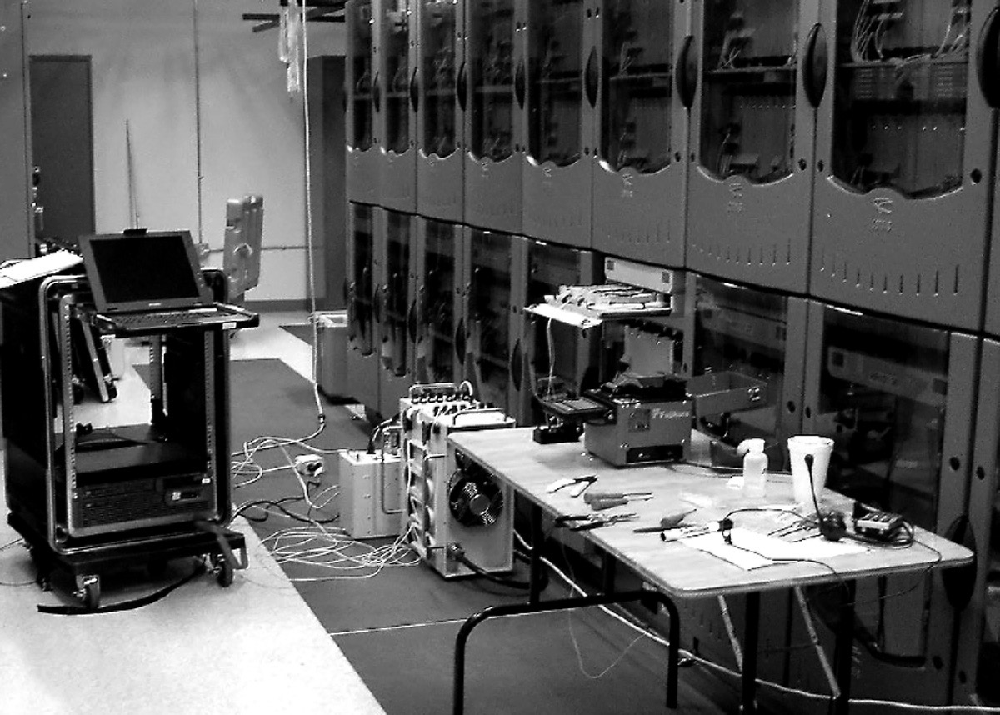
Por lo general, los cables OSP monomodo se terminan empalmando coletas en cada fibra y los empalmes se colocan en un cierre de empalme. Las fibras multimodo pueden manipularse del mismo modo o terminarse directamente en las fibras. La mayoría de los cables OSP requieren la instalación de un kit de empalme que envuelve cada fibra en un tubo lo suficientemente resistente para la terminación directa.
Equipamiento del Personal de Instalación
Equipar al instalador con herramientas
A medida que se acerca el momento de la instalación propiamente dicha, es hora de determinar cómo equipar a las cuadrillas que realizarán el trabajo. Elegir el equipo de instalación y prueba adecuado es importante, ya que afectará al tiempo y la calidad de la instalación o incluso determinará la rentabilidad del trabajo. La frecuencia de los problemas causados por las herramientas es alarmante: su mal diseño, su uso inadecuado, su mal estado o el desconocimiento de su uso.
Entre las herramientas de instalación se incluyen algunas de gran tamaño, como camiones cazo, zanjadoras, extractores de cable o arados. La necesidad de estos equipos se determinará en las primeras fases de planificación. Muchos contratistas no poseen este tipo de equipos caros y les resulta más rentable alquilarlos cuando los necesitan. Si el personal no está familiarizado con un determinado equipo, puede subcontratar el trabajo a alguien que disponga tanto del equipo como de una tripulación experimentada puede resultar mucho más rentable, ya que los errores en su manejo pueden ser desastrosos, tanto en costo como peligroso.
Los cables de planta exterior y los cables monomodo de las instalaciones suelen requerir empalmes por fusión para concatenar tramos largos de cable y empalmes en coletas para su terminación. Desde que las empalmadoras de fusión son más baratas, cada vez son más los contratistas que las compran. Otros contratistas que tienen menos proyectos que requieren empalmes prefieren alquilarlas, sabiendo que obtienen una empalmadora de un modelo más nuevo con la última tecnología que haya sido revisado recientemente. La desventaja de una unidad de alquiler es que sus instaladores pueden no estar familiarizados con ese modelo y necesitar formación o tiempo para familiarizarse con él. Si usted es el propietario de su empalmadora, se supone que su personal está familiarizado con su funcionamiento y sólo tiene que inspeccionar la unidad para asegurarse de que funciona correctamente y de que los electrodos de arco están en buenas condiciones.
La mayoría de los contratistas poseen equipos de terminación para fibra multimodo, ya que se utiliza en la mayoría de los trabajos. En general, los contratistas tienen un método preferido de terminación, ya sea adhesivo/pulido o prepulido/empalme. Cualquiera de los dos tipos requiere juegos de herramientas específicos. Para las terminaciones con epoxi o Hot Melt, se necesitarán los hornos de curado adecuados, y los dos son bastante diferentes; el horno Hot Melt es mucho más caliente. Si utiliza adhesivos epoxídicos o anaeróbicos de sus existencias, compruebe las fechas de caducidad de todos ellos para asegurarse de que son frescos. Comprueba también otros consumibles como toallitas, alcohol isopropílico, gel limpiador de cables y, por supuesto, conectores.
Los conectores de empalme prepulidos son cada vez mejores y más fáciles de usar. Los nuevos kits de terminación incluyen una cuchilla de calidad como las que se utilizan con las empalmadoras de fusión y un localizador visual de fallos para verificar el empalme interno. Dado que los nuevos kits pueden producir ahora conectores que tienen menores pérdidas, alrededor de 0.5 dB, un nuevo equipo con los últimos conectores y quizás algo de formación podría ser una buena inversión.
Cuando revise los kits de terminación, preste especial atención al estado de las herramientas. Por supuesto, habrá que sustituir las herramientas que falten, pero es de esperar que se haya hecho cuando se inspeccionaron los kits después del último trabajo. Sin embargo, las herramientas como los pelacables, los peladores de fibras y las cuchillas pueden desgastarse o dañarse, por lo que es importante comprobar su funcionamiento con algunas fibras de muestra para ver si funcionan correctamente.
Es obligatorio comprobar todos los equipos que vaya a llevar al lugar de trabajo para garantizar su correcto funcionamiento y permitir que el personal de instalación se familiarice con su manejo. Este proceso debe hacerse con tiempo suficiente para revisar o sustituir la unidad y reponer los consumibles. También debería ser obvio que nunca hay que volver a guardar un equipo que ha tenido problemas sobre el terreno. Debe sustituirse inmediatamente o enviarse a reparar para que esté listo para el siguiente trabajo.
Permítanme advertirles de otro problema que hemos observado recientemente con las herramientas. Varias quejas recientes sobre herramientas de mala calidad, especialmente pelacables, nos han llevado a pensar que las importaciones de mala calidad son cada vez más frecuentes. En un caso, las herramientas parecen haber sido falsificadas, con una marca americana conocida. Le sugiero que adquiera herramientas sólo de fuentes acreditadas y que las inspeccione cuando las reciba para asegurarse de que funcionan correctamente.
Por último, a medida que se comprueba el equipo y se prepara para su uso, asegúrese de que las herramientas van acompañadas del equipo de seguridad adecuado. Todos los que trabajan con fibra necesitan gafas de seguridad, y unas gafas limpias y sin arañazos harán que sea mucho más fácil ver esas fibras tan finas. Las alfombrillas de trabajo negras para empalmes y terminaciones también ayudan al instalador a ver las fibras y a encontrar los restos de fibra para facilitar la limpieza.
Equipamiento del Instalador Con Equipos de Prueba
Los instaladores también necesitan equipos de prueba. Hay muchas opciones en cuanto a sofisticación y coste de los equipos de prueba de fibra óptica. Una selección adecuada puede reducir tanto los costes de los equipos como los de la mano de obra. Los tipos y cantidades de equipos de prueba necesarios también variarán según el tipo de trabajo.
Todos los técnicos de instalación deberían llevar un trazador visual o localizador visual de fallos. El trazador es una linterna o fuente LED visible que se utiliza con fibra multimodo para comprobar la continuidad y rastrear fibras para garantizar conexiones adecuadas. Un localizador visual de fallos es una fuente de láser visible de mayor potencia que se puede utilizar con fibra monomodo o multimodo para el rastreo, pero que también permitirá encontrar algunos fallos como tensiones o roturas en la mayoría de los cables símplex o zipcord o fibras simples con recubrimiento. Tanto los trazadores visuales como los localizadores de fallos son baratos pero muy valiosos durante el proceso de instalación y solución de problemas.
Cada fibra de una planta de cable de fibra óptica requiere una prueba de pérdidas con una fuente de luz y un medidor de potencia, también denominado equipo de prueba de pérdidas ópticas (OLTS). El OLTS confirmará que la fibra fue instalada y terminada correctamente, al realizar pruebas de pérdida de extremo a extremo y compararla con el presupuesto de pérdida creado durante la fase de diseño. Los trabajos de gran envergadura pueden requerir más de un equipo para terminar el trabajo a tiempo. Los equipos de prueba de pérdidas se presentan en varias configuraciones, entre las que se incluyen una fuente de luz y un medidor de potencia independientes que suelen venderse como kit de prueba, un OLTS, que es un único instrumento que incluye tanto la fuente de luz como el medidor de potencia, y módulos para convertir los comprobadores de cobre en un OLTS. La fuente de luz y el medidor de potencia individuales suelen ser la solución más barata, sobre todo para trabajos pequeños, ya que el medidor y la fuente pueden separarse para que dos técnicos los lleven a cada extremo del cable que se va a probar. Si se utiliza un OLTS, se necesitarán dos personas para probar un cable de extremo a extremo, pero puede probar dos fibras a la vez, lo que ahorra costes de mano de obra. Los adaptadores OLTS para comprobadores de cobre no suelen ser baratos, pero pueden aprovechar el sofisticado manejo de datos del caro comprobador de cobre y producir informes completos. Los contratistas suelen elegir estos adaptadores si ya han invertido en los comprobadores de cobre.
Cada equipo de prueba de pérdidas necesita cables de prueba de referencia. Se trata de cables de fibra óptica de 1-2 metros de distancia que coinciden con el tamaño de la fibra y los conectores de los cables que se están probando. Los cables de referencia no tienen por qué ser cables especiales, basta con que se haya comprobado que tienen bajas pérdidas. Los patchcords malos darán malos resultados en las pruebas, haciendo que las fibras buenas no superen las pruebas. Los cables de referencia deben de verificarse con frecuencia para asegurarse de que siguen en buen estado y tienen pocas pérdidas. Es conveniente que cada equipo de pruebas disponga de varios juegos de cables de referencia, ya que se desgastan o se dañan y es necesario sustituirlos.
Los tendidos exteriores largos con empalmes intermedios requerirán pruebas OTDR. Los OTDR también son buenas herramientas de localización de averías para instalaciones de cables largos, pero no suelen estar diseñados para utilizarse en cables cortos, como los habituales en aplicaciones de planta interna. Los OTDR son instrumentos caros y complicados. A menos que se utilicen con frecuencia, es difícil justificar su coste. Los usuarios que no están familiarizados con las peculiaridades de la interpretación de los datos del OTDR causan muchos problemas, fallando cables buenos y pasando cables malos, a menudo con consecuencias caras. Los OTDR pueden alquilarse, pero teniendo en cuenta el número de problemas que vemos causados por usuarios inexpertos, encargar las pruebas de OTDR a un contratista experimentado también podría ser una decisión inteligente.
Los OTDR también necesitan cables de referencia, especialmente un cable de lanzamiento largo, lo suficiente para permitir que el OTDR se estabilice de la sobrecarga causada por el pulso de prueba. Para fibra monomodo, se recomienda un cable de lanzamiento de 1 km.
100 metros son suficientes para la mayoría de los OTDR multimodo. Las nuevas normas exigen un cable en el otro extremo del cable sometido a prueba para poder probar el conector en el extremo más alejado, donde 100 metros de largo suelen ser suficientes.
Lo más importante que hay que recordar sobre los equipos de prueba es saber utilizarlos y comprobarlos siempre antes de llevarlos al lugar de trabajo. Hay que cambiar o recargar las pilas, comprobar los cables de referencia y, lo que es más importante, dedicar unos minutos a refrescar la memoria sobre cómo se utiliza el instrumento. El lugar de trabajo no es el sitio adecuado para descubrir que el equipo no está listo para su uso.
Formación y Seguridad
Formación en Fibra Óptica
La regla número 1 de la instalación de fibra óptica es no intentar nunca instalar un nuevo tipo de componente o realizar un nuevo tipo de aplicación sin la formación adecuada. No tener el conocimiento o las habilidades relacionadas con ese componente o aplicación hace virtualmente imposible asegurar el éxito en el trabajo y los errores pueden ser muy caros.
Nadie puede saberlo todo ni ningún curso de formación puede abarcar todos los aspectos de la fibra óptica, todos los tipos de componentes y aplicaciones. De todos modos, la tecnología siempre está avanzando, por lo que es importante seguir adquiriendo conocimientos de todas las fuentes disponibles. Gran parte de los conocimientos técnicos necesarios se pueden obtener en materiales de formación técnica, pero ¿qué ocurre con las habilidades necesarias para trabajar con componentes de fibra óptica reales para la instalación, las pruebas, la resolución de problemas y la restauración? Estos conocimientos sólo pueden adquirirse con la formación y la experiencia.
Más Formación
¿Qué tipo de formación se necesita para tener éxito como contratista o instalador de fibra óptica y dónde se puede obtener esa formación? Hay muchas opciones para seguir formándose, pero primero tiene que averiguar cuáles son sus necesidades, qué formación debe incluir y quién puede impartir la formación adecuada. Como norma general, toda formación en fibra óptica dirigida a instaladores debe incluir suficientes actividades prácticas con los equipos, herramientas y componentes pertinentes para que el alumno desarrolle las habilidades adecuadas para esa actividad.
Los técnicos de fibra óptica con cierta experiencia a menudo pueden aprender a instalar muchos tipos de componentes nuevos o a manejar equipos nuevos por su cuenta. Existen tutoriales con información sobre la mayoría de los temas de instalación, así como tutoriales prácticos virtuales sobre cómo se hace, paso a paso. La mayoría de los fabricantes tienen buenas instrucciones y a menudo tutoriales en línea para ayudar. Con las herramientas adecuadas y la información sobre las aplicaciones, el técnico astuto debería ser capaz de aprender nuevos procesos en poco tiempo. El secreto, por supuesto, está en hacerlo en un entorno de oficina tranquilo y limpio antes de probarlo en las instalaciones de un cliente con él mirando por encima del hombro.
A veces, es mejor hacer un curso. Muchas escuelas de formación técnica ofrecen cursos avanzados o especializados en terminación, empalme, pruebas, fibra hasta el hogar, etc. que proporcionan varios días de formación intensiva, con herramientas, equipos y suministros, así como instructores familiarizados con los procesos que se enseñan. Los fabricantes también ofrecen formación específica sobre productos, pero hay que intentar que la impartan ingenieros de aplicaciones y no personal de ventas, que quizá no tengan los conocimientos necesarios para formar adecuadamente a los instaladores.
Aprender a Instalar Nuevos Componentes
Hay cientos de tipos diferentes de componentes de fibra óptica que los fabricantes han desarrollado para aplicaciones específicas o para simplificar el trabajo del instalador. Muchos de estos componentes son exclusivos de ese fabricante y pueden requerir herramientas y procesos de instalación especiales. Ejemplos son conectores prepulidos/empalmados como el Corning Unicam, conectores 3M HotMelt, cierres de empalme, cables autosoportados totalmente dieléctricos, cable de tierra de alimentación óptica, sistemas de cableado prefabricado, etc.
Por lo general, se debe acudir directamente al fabricante para este tipo de formación, a menos que un formador independiente haya sido formado y esté recomendado por el fabricante y disponga de las herramientas y componentes adecuados para enseñar los procesos necesarios. Algunos fabricantes ofrecen cursos introductorios breves sobre sus nuevos productos que incluyen un tiempo limitado de prácticas, y esa formación puede ser ideal para quienes estén interesados en conocer mejor ese producto antes de comprometerse a comprar todas las herramientas y componentes necesarios para utilizarlo. Una vez realizada la compra, se puede seguir con una formación completa.
Aprender a Utilizar Nuevos Equipos
Algunos de los equipos necesarios para la instalación de fibra óptica son complicados y puede resultar difícil aprender a utilizarlos sin una instrucción adecuada sobre los mismos. Algunos ejemplos son las empalmadoras por fusión automatizadas, especialmente las empalmadoras de cinta, los equipos de tracción o arado de cables y los OTDR.
Algunos de estos equipos son bastante complejos y cuentan con productos periféricos que deben utilizarse correctamente junto con ellos para conseguir los resultados esperados. Las empalmadoras de cinta, por ejemplo, utilizan peladoras y cortadoras de cinta, ambas fundamentales para lograr empalmes uniformemente buenos. Todas las empalmadoras automáticas tienen características de programación únicas, por lo que es necesario aprender a manejar la propia empalmadora y a realizar empalmes con ella. Los OTDR también son dispositivos complicados y aprender a utilizarlos tiene dos partes - aprender a manejar el OTDR con todas sus opciones e interpretar los datos que toma al probar una fibra (la traza o firma, como se denomina). Aunque todos los fabricantes de OTDR ofrecen opciones de "prueba automática", no se puede confiar en ellas en todos los usos, ya que pueden confundirse fácilmente con artefactos como los fantasmas. El usuario siempre debe comprobar manualmente la traza del OTDR para asegurarse de que las conclusiones de los datos de prueba son correctas.
La formación debe impartirse sobre el tipo y modelo real del equipo de interés especifico, ya que los productos de distintos fabricantes o los distintos modelos de un mismo fabricante pueden tener características únicas. Para ser eficaz, la formación debe incluir dos fases: cómo configurar y manejar el propio equipo y cómo completar los procesos para los que está destinado. Por lo general, los fabricantes ofrecen formación sobre estos productos y los formadores independientes pueden utilizar los mismos equipos o estarán dispuestos a formarle sobre su equipo si ya lo ha adquirido.
Aprender Nuevas Aplicaciones
Un punto que señalamos a menudo es que hay muchas aplicaciones diferentes para la fibra óptica y que hay diferencias sustanciales en cómo se diseñan, instalan y prueban esas aplicaciones. Los técnicos de planta externa, por ejemplo, generalmente terminan empalmando en pigtails hechos en fábrica, mientras que los técnicos de instalaciones terminan directamente en las fibras con conectores adhesivos/pulidos o prepulidos/empalmados. Los técnicos de FTTx sólo pueden utilizar conjuntos de cables prefabricados. Los técnicos que pasan de una aplicación a otra pueden necesitar formación, así como formación en el puesto de trabajo (OJT) para comprender la aplicación y desarrollar las habilidades adecuadas.
Encontrar a Formación Adecuada
Sea cual sea tu interés, asegúrate de que los cursos que tomas son adecuados a tus intereses o estarás perdiendo tiempo y dinero. Aquí tienes algunas opciones a tener en cuenta:
¿Puedes aprenderlo tú solo? Algunos aprendemos mejor solos. ¿Hay información sobre el tema fácilmente disponible? Los buenos vídeos también pueden ayudar, especialmente con temas prácticos como el tendido y la terminación de cables. ¿Puede conseguir las herramientas y componentes adecuados para desarrollar las habilidades necesarias? ¿Hay alguien a quien pueda pedir ayuda?
¿Ofrece el fabricante formación? ¿Cubre lo que necesitas saber? ¿Ofrece mucha práctica con los equipos y componentes? ¿Le certificarán como instalador autorizado de ese fabricante? Eso puede ayudarle a conseguir clientes de ese fabricante.
¿Ofrecen los formadores independientes formación en este ámbito? ¿Cubre lo que necesita saber? ¿Dispone el formador de la última versión del equipo necesario para la formación? ¿Le formarán con su equipo? ¿El instructor tiene experiencia y conoce bien los productos y la tecnología? ¿Puede el formador ofrecer la certificación del fabricante, así como otras certificaciones?
¿Dónde se imparte la formación? Los gastos de viaje pueden aumentar considerablemente el coste de la formación.
Seguridad en el trabajo con fibra óptica
Seguridad
La seguridad de los OSP es una cuestión muy importante, mucho más allá de los problemas habituales de la fibra, como protegerse los ojos de los fragmentos de fibra o trabajar con productos químicos potencialmente peligrosos. Las rutas deben despejarse con los servicios "One Call" o "Call before you dig" para garantizar que no haya cables o tuberías enterrados en la ruta propuesta. Los instaladores que trabajen con maquinaria de colocación de cables deben estar bien formados para manejarla con seguridad. Las instalaciones aéreas son especialmente peligrosas,
ya que los postes suelen tener cables eléctricos cerca. Todos los trabajos de OSP deben contar con procedimientos de seguridad y todo el personal debe recibir instrucciones sobre su uso.
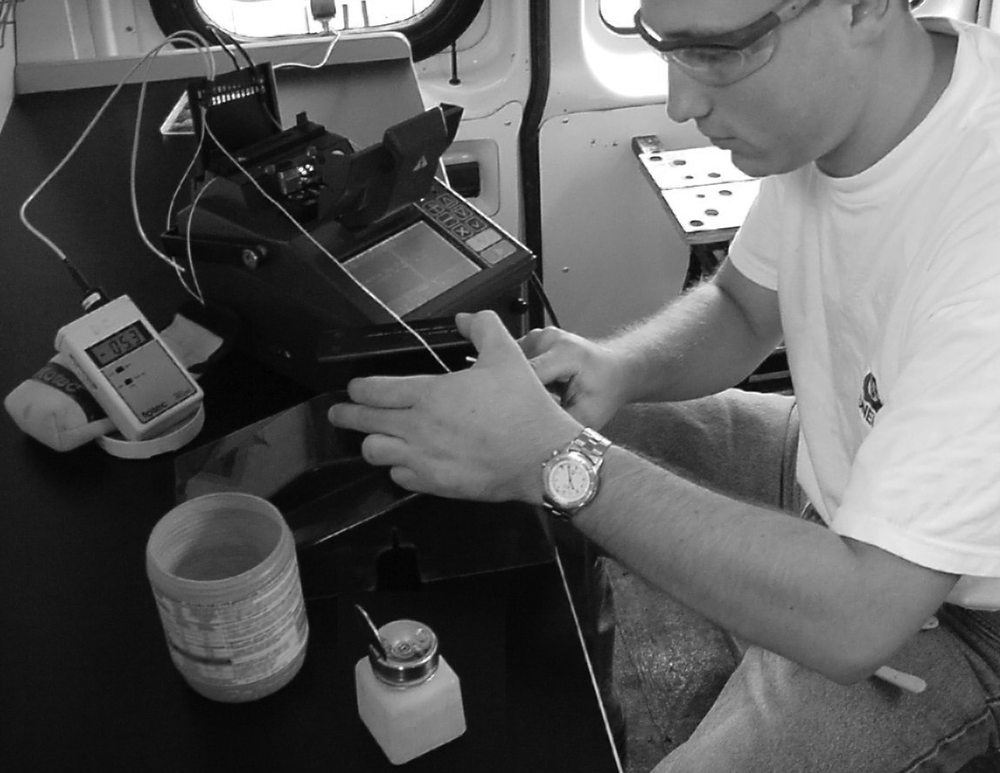
La seguridad en el laboratorio o en la obra debe ser la principal preocupación de todos. Además de los problemas de seguridad habituales en la construcción, generalmente cubiertos por las normas de la OSHA que deberían ser conocidas por todos los contratistas e instaladores, la fibra óptica añade problemas de seguridad ocular, productos químicos, chispas producidas por empalmes de fusión, eliminación de fragmentos de fibra y otros. Antes de comenzar cualquier instalación, deben publicarse las normas de seguridad en la pared del aula, del laboratorio o del lugar de trabajo y revisado con todo el personal de la obra. Todo el personal debe llevar el equipo de seguridad habitual en la construcción, además de protección ocular siempre que trabaje con fibra.
Seguridad Ocular
A mucha gente le preocupa que la parte más peligrosa del trabajo con fibra óptica sea la posibilidad de que te dañes los ojos con la luz láser de la fibra.
Habían confundido la fibra óptica de comunicaciones con las fibras ópticas acopladas a la salida de los láseres de alta potencia utilizados para cortar metal, quemar verrugas de la piel en los médicos o quizás han visto demasiadas películas de ciencia ficción.
De hecho, la mayoría de los sistemas de fibra óptica no tienen potencia suficiente para causar daño a los ojos y la luz que sale de una fibra se expande, por lo que cuanto más lejos estés del extremo de la fibra, menor será la exposición. Dicho esto, considérese advertido. En tiempos más recientes, algunos sistemas de fibra óptica transportan suficiente potencia como para ser peligrosos y algunas técnicas de inspección de fibra óptica que pueden utilizarse en sistemas operativos aumentan las posibilidades de sufrir daños. Pero ese no es el mayor peligro al que se enfrentan los instaladores.
La clave para entender el problema de la potencia es comprender los niveles de potencia, la longitud de onda de la luz y la naturaleza de la transmisión de la luz en la fibra óptica. Los sistemas láser médicos de fibra óptica utilizados para cirugía y los sistemas de mecanizado por láser tienen ciertamente potencia suficiente para causar daños en los ojos, así como para quemar verrugas o mecanizar algunos tipos de materiales. Estos sistemas utilizan láseres de muy alta potencia, a menudo láseres de CO2, que emiten radiación a una longitud de onda que en realidad es calor y no luz, alrededor de 10 micrones de longitud de onda. Esta longitud de onda es absorbida fácilmente por los materiales y puede calentarlos rápidamente, cortando esos materiales con facilidad.
Los sistemas de comunicación por fibra óptica utilizan mucha menos potencia. En primer lugar, la mayoría de las fuentes utilizadas en fibra óptica están optimizadas para la velocidad de modulación, no para la potencia absoluta. El cableado en predios con fibra multimodo y fuentes LED tiene niveles de potencia muy bajos, demasiado bajos para ser peligrosos. Los enlaces de predios o planta interna de mayor velocidad utilizan láseres VCSEL, cuyos niveles de potencia siguen siendo bastante bajos y, por lo general, inofensivos. La mayoría de los enlaces de telecomunicaciones utilizan láseres con niveles de potencia ligeramente superiores a los VCSEL.
Hay dos tipos de enlaces de alta potencia, hasta 100 veces más que otros sistemas de comunicaciones: los enlaces de CATV o vídeo a 1550 nm y los enlaces de larga distancia de telecomunicaciones que utilizan multiplexación por división de longitud de onda densa (DWDM). Los enlaces de CATV o vídeo utilizados en la fibra hasta el hogar (FTTH - lea más) pueden utilizar amplificadores de fibra (lea más) que elevan la potencia a niveles muy altos, potencialmente peligrosos para la vista. Los enlaces DWDM de telecomunicaciones se utilizan en enlaces de muy larga distancia (más información). No sólo utilizan amplificadores de fibra para aumentar la potencia, sino que tienen muchas señales diferentes que operan en diferentes longitudes de onda transportadas en una fibra monomodo. Una sola longitud de onda puede no ser un problema, pero la suma de 16, 32 o 64 longitudes de onda individuales puede ser muy potente.
El siguiente problema es enfocar la luz de una fibra hacia el ojo. La luz que sale de una fibra óptica se propaga en un cono, cuyo ángulo viene determinado por las características de transmisión de la fibra, determinadas por la apertura numérica. A medida que el ojo se aleja del extremo de la fibra, la cantidad de radiación que recibe es inversamente proporcional al cuadrado de la distancia; duplicar la distancia y reducir la potencia en 1/4, diez veces la distancia reduce la potencia a aproximadamente el 1%. No hace falta estar muy lejos de la fibra para que la potencia se reduzca a niveles bajos e inofensivos.
Como la luz sale de la fibra en forma de cono, el ojo no puede enfocarla en la retina. A diferencia del típico láser de laboratorio o puntero láser, que emite un haz estrecho y colimado que no se dispersa; un haz que el ojo puede enfocar fácilmente en la retina, causando ceguera temporal.
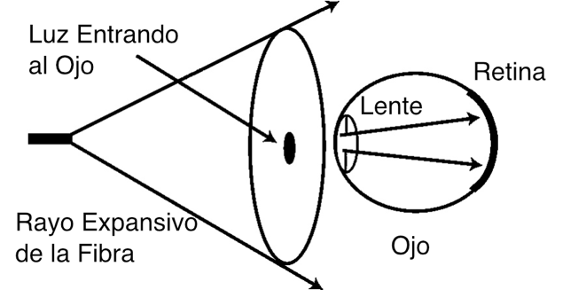
Por último, está la cuestión de la longitud de onda. El ojo no puede ver muchas de las longitudes de onda utilizadas en la fibra óptica porque es sensible a la luz de la región azul a roja del espectro, mientras que los sistemas de fibra óptica funcionan en el infrarrojo. El líquido del ojo, que en su mayor parte es agua, absorbe en gran medida la luz infrarroja. La luz de la mayoría de las fuentes de fibra óptica será absorbida por este líquido, por lo que es probable que cualquier daño potencial se produzca en el cristalino o la córnea, no en la retina.
Aunque la expansión del haz de luz que sale de la fibra hace que sea menos problemático para la visión directa, el uso de un microscopio de inspección de fibras puede ser un problema. Un microscopio enfocará prácticamente toda la luz hacia el ojo. Por eso, muchos microscopios utilizados en fibra óptica tienen filtros para absorber cualquier luz infrarroja (IR) que pudiera ser perjudicial. Desconfíe de los microscopios baratos que no dispongan de filtros de bloqueo de infrarrojos.
Para asegurarse de que es seguro inspeccionar o trabajar con las fibras, compruebe siempre las fibras de una red en funcionamiento con un medidor de potencia de fibra óptica para asegurarse de que no hay luz antes de inspeccionar cualquier conector con un microscopio.
Seguridad al Trabajar con Fibra Desnuda
Sin embargo, la instalación de fibra óptica no está exenta de riesgos. El problema más común es que le entren trozos de fibra en los ojos cuando trabaja con fibra. Aunque pocos sistemas de fibra óptica tienen niveles nocivos de potencia, cada terminación y empalme produce fragmentos (trozos) de fibra óptica que son potencialmente muy dañinos para los ojos y la piel o pueden adherirse a la ropa y ser transportados a otros lugares donde pueden ser perjudiciales para otras personas.
Estos fragmentos de fibra son diminutos, finos y a menudo muy afilados en el lugar donde se desprendieron de la fibra. Pueden perforar fácilmente su piel, enterrándose profundamente lo suficiente como para que sea difícil arrancarlos, si tan sólo pudieras verlos. Al ser transparentes, prácticamente desaparecen cuando se clavan en la piel. En la mayoría de las partes del cuerpo, se convierten simplemente en una molestia, tal vez infectando o causando un bulto irritante, hasta que finalmente se resuelven por sí mismos.
Sin embargo, alrededor del ojo pueden ser mucho más difíciles de encontrar y eliminar. Las lágrimas que humedecen los ojos hacen que los fragmentos de vidrio transparente sean prácticamente imposibles de encontrar y extraer. Los extremos afilados de la fibra pueden hacer que se incruste en el ojo o en el tejido circundante, lo que dificulta aún más su eliminación. A diferencia de las partículas metálicas, no pueden extraerse con imanes.
Es imprescindible seguir procedimientos que minimicen los peligros para los ojos. Lleve siempre gafas de protección con protectores laterales, incluso si normalmente lleva gafas, para evitar que cualquier fragmento volador se acerque a sus ojos. Tenga extrema precaución al manipular fibras, especialmente al pelarlas o trazar y romper la fibra que sale de un conector adhesivo. En lugar de romperla, escríbala suavemente y, a continuación, deslice los dedos por la férula del conector, agarre la fibra y tire de ella. A continuación, deséchela con cuidado.
La mayoría de las cortadoras utilizadas para empalmar o terminar conectores prepulidos/empalmados retienen la fibra después de cortarla, por lo que el único problema es deshacerse de ella. Recomendamos utilizar recipientes desechables como los que se usan para las sopas en los restaurantes. Utilízalo para todos tus restos de fibra y luego ciérralo y deséchalo adecuadamente.
También puedes configurar tu lugar de trabajo para evitar problemas.
Utilice una alfombrilla de plástico negra como superficie de trabajo. El fondo oscuro hará que sea más fácil ver las fibras con las que está trabajando y manejarlas con más cuidado. Las fibras rotas que caigan sobre la alfombrilla se encontrarán fácilmente para su eliminación.
A algunos técnicos les gusta colocar un trozo de cinta adhesiva de doble cara o un lazo de cinta aislante negra sobre la alfombrilla y pegar las fibras a la superficie adhesiva, y luego deshacerse de la cinta al terminar. Yo prefiero utilizar simplemente un recipiente desechable y colocar todos los restos de fibras en él en lugar de dejarlos expuestos sobre la superficie de trabajo.
Otras consideraciones de seguridad: Productos químicos, riesgos eléctricos, etc. Productos químicos: El empalme y la terminación de fibra óptica utilizan diversos limpiadores químicos y adhesivos como parte de los procesos. Los procedimientos normales de manipulación de estas sustancias. Incluso el alcohol isopropílico simple, utilizado como limpiador, es inflamable y debe manipularse con cuidado. Los fabricantes facilitan "fichas de datos de seguridad" (MSDS) si se solicitan o pueden encontrarse en Internet.
Peligros del empalme: Las empalmadoras por fusión utilizan un arco eléctrico para realizar los empalmes, por lo que se debe tener cuidado para garantizar que no haya gases inflamables en el espacio donde se realiza el empalme por fusión.
Prohibido fumar: Tampoco debe permitirse fumar cerca de trabajos de fibra óptica. Las cenizas del tabaco contribuyen a los problemas de suciedad de las fibras, además de la posible presencia de sustancias combustibles (y, por supuesto, los riesgos para la salud.)
Riesgos eléctricos: La instalación de cableado de fibra óptica no suele entrañar riesgos eléctricos, a menos que el cable incluya conductores. Sin embargo, estos cables suelen instalarse cerca de cables eléctricos y conductores. Siempre que esté cerca de estos cables, existe un riesgo potencial de descarga eléctrica. Tenga cuidado. Si no está familiarizado con la seguridad eléctrica, le recomendamos que realice un curso sobre el NEC (Código Eléctrico Nacional) y las prácticas de seguridad para instaladores.
Normas de Seguridad Para la Instalación de Fibra Óptica
Todo esto es muy importante, lo suficientemente importante como para que todos los técnicos de fibra óptica tengan unas cuantas normas en el lugar de trabajo que puedan evitar accidentes laborales:
- Trabaje sobre una superficie de trabajo negra, ya que ayuda a encontrar los restos de fibra.
- Utilice delantales desechables para minimizar las partículas de fibra en su ropa. Las partículas de fibra en la ropa pueden introducirse posteriormente en alimentos, bebidas y/o ser ingeridas por otros medios.
- Utilice siempre gafas de seguridad con protección lateral y guantes de protección.
Trate las astillas de fibra óptica igual que trataría las de vidrio.
- Nunca mire directamente al extremo de los cables de fibra hasta que esté seguro de que no hay ninguna fuente de luz en el otro extremo. Utilice un medidor de potencia de fibra óptica para asegurarse de que la fibra está a oscuras. Cuando utilice un trazador óptico o un comprobador de continuidad, mire a la fibra desde un ángulo situado al menos a 15 cm de su ojo para determinar si hay luz visible...
- Trabaje únicamente en zonas bien ventiladas.
- Los usuarios de lentes de contacto no deben manipularlas hasta haberse lavado bien las manos.
- No se toque los ojos mientras trabaje con sistemas de fibra óptica hasta que se haya lavado bien las manos.
- Mantenga todos los materiales combustibles alejados de dispositivos eléctricos, incluidos empalmadores, comprobadores y hornos de curado.
- Deposite todos los trozos de fibra cortada en un contenedor debidamente marcado para su eliminación.
- Limpie a fondo la zona de trabajo cuando termine.
- No fume mientras trabaje con sistemas de fibra óptica.
- Mantenga todos los alimentos y bebidas fuera del área de trabajo. Si las partículas de fibra son ingeridas podrían causar hemorragias internas.
Instalación de Cable de Fibra Óptica
Recepción de cableado y equipos de fibra óptica en sitio
Los equipos y componentes de fibra óptica están sujetos a daños por manipulación o almacenamiento inadecuados y deben manipularse en consecuencia.
Recibo
La entrega del cable de fibra óptica, el equipo y los suministros en el lugar de trabajo debe programarse lo más cerca posible del momento de su utilización para minimizar los posibles daños causados por otras obras, las condiciones meteorológicas o los robos. La coordinación de las entregas puede resultar difícil, por lo que deberá organizarse la entrega en una zona de acopio fuera de la obra o en un contenedor de almacenamiento cerrado en la obra. Cuando se reciban por primera vez, todos los componentes de fibra óptica deben inspeccionarse cuidadosamente en busca de daños y, si se sospecha que están dañados, debe comprobarse su continuidad o pérdida. Asegúrese de que todos los componentes y piezas han sido enviados, recibidos, coinciden con las cantidades pedidas (por ejemplo, el cable de fibra óptica contiene el número, tipo de fibra pedida, y el largo pedido), y de que cualquier discrepancia o mercancía dañada se anota, se notifica al proveedor y se sustituye según sea necesario.
Manipulación de Cables de Fibra Óptica
Manipule las bobinas de cable de fibra óptica con cuidado. Todas las bobinas, independientemente de su tamaño o longitud, deben tener ambos extremos del cable disponibles para realizar pruebas de continuidad. Para las pruebas de continuidad pueden utilizarse un trazador de fibra o un localizador visual de fallos y adaptadores de fibra desnuda.
Las bobinas de cable deben moverse con cuidado para evitar dañar el cable. Mueva las bobinas pequeñas y ligeras de cable de fibra óptica a mano. Mueva las bobinas más grandes con un equipo de elevación adecuado o con dos o más instaladores expertos en la operación de traslado. El equipo de elevación solo debe mover bobinas con un conjunto correspondiente de eslingas o anillos de sujeción, unidos a una pieza de tubo de tamaño adecuado insertada en el agujero en el centro de la bobina. Las eslingas y los estranguladores nunca deben fijarse alrededor de la zona del cable enrollado del carrete.
Almacenamiento
Todos los equipos y el cableado deben almacenarse en un lugar limpio y seco, protegidos de entornos adversos como el frío y el calor extremos. Debido al valor del cable y a la posibilidad de robo, todos los componentes deben almacenarse de forma segura y con protecciones cuando o donde sea necesario.
Directrices generales para la instalación de cables de fibra óptica
Los cables de fibra óptica se instalan en tantas aplicaciones diferentes que generalizar sobre cómo instalar fibra es muy difícil, por lo que este libro intentará cubrir las preocupaciones universales y mencionar las específicas cuando sea apropiado.
El cable de fibra óptica puede instalarse en interiores o exteriores mediante distintos procesos de instalación. Los cables de exterior pueden enterrarse directamente, introducirse en un conducto o conducto interior o instalarse en el aire entre postes. Los cables de interior pueden instalarse en canalizaciones, bandejas de cables sobre techos o bajo suelos, colocarse en perchas, introducirse en conductos o conductos internos o soplarse a través de conductos especiales con gas comprimido. El proceso de instalación dependerá de la naturaleza de la instalación y del tipo de cable que se utilice.
Los métodos de instalación de los cables de comunicaciones de alambre y de fibra óptica son similares. El cable de fibra está diseñado para ser tirado con mucha más fuerza que el de cobre si se tira correctamente, pero un exceso de tensión en el cable puede dañar las fibras, causando potencialmente un fallo final. Hay que tener especial cuidado durante la instalación para evitar exceder el radio de curvatura o doblar el cable, lo que puede dañar las fibras.
Guías Para Instalación
Siga las recomendaciones del fabricante del cable, ya que nadie sabe manipularlo tan bien como la empresa que lo ha fabricado. El cable de fibra óptica suele diseñarse a medida para la instalación y el fabricante puede tener instrucciones específicas sobre su instalación.
Compruebe la longitud del cable para asegurarse de que el cable del que se tira es lo suficientemente largo para el recorrido previsto. Intente completar la instalación de un solo tirón si es posible.
Antes de cualquier instalación, evalúe cuidadosamente la ruta para determinar los métodos de instalación y los obstáculos que probablemente se encontrarán.
Tensión de Tracción
Los fabricantes de cables instalan elementos de refuerzo especiales, normalmente hilo de aramida (Dupont Kevlar), para absorber la tensión de tracción del cable. Los cables de fibra óptica sólo deben tirarse por estos elementos de refuerzo, a menos que el diseño del cable permita tirar de la cubierta. Cualquier otro método puede ejercer tensión sobre las fibras y dañarlas.
Deben utilizarse anillas de tracción giratorias para fijar la cuerda o cinta de tracción al cable y evitar que éste se retuerza durante la tracción.
No se debe tirar de los cables por la cubierta a menos que esté específicamente aprobado por los fabricantes del cable y se utilice un agarre de cable aprobado, a menudo llamado "agarre Kellems". Estas mordazas también suelen estar atadas a los elementos de refuerzo.
El cable tensor apretado se puede tirar por la cubierta en aplicaciones en predios si se utiliza una bobina grande (~40 cm, 8 pulg.) como mandril de tracción. Enrolle el cable alrededor de la bobina 5 veces y sujételo suavemente al tirar.
No supere la tensión de tracción máxima. Consulte al fabricante del cable y a los proveedores de conductos, conductos internos y lubricantes para cables para obtener directrices sobre los valores nominales de tensión y el uso de lubricantes.
Al tirar de grandes distancias de cable en conducto o conducto interno (hasta aproximadamente 3 millas o 5 kilómetros en la planta exterior, cientos de metros en el cableado de las instalaciones), utilice lubricantes adecuados para cables, pero asegúrese de que es compatible con la cubierta del cable.
Si es posible, utilice un extractor automático con control de tensión y/o anilla de tracción. En tramos de OSP muy largos (más de 4 kilómetros o 2.5 millas aproximadamente), tire desde el centro hacia ambos extremos o utilice un tirador de fibra automatizado en los puntos intermedios para una tracción continua.
Cuando coloque bucles de fibra sobre una superficie durante una tracción, utilice bucles en forma de "figura 8" para evitar que el cable se retuerza.
Torción del Cable
No retuerza el cable. La torsión del cable puede tensar las fibras. La tensión en el cable y las cuerdas de tracción pueden causar torsión. Utilice una argolla de tracción giratoria para conectar la cuerda de tracción al cable y evitar que la tensión de tracción provoque fuerzas de torsión en el cable.
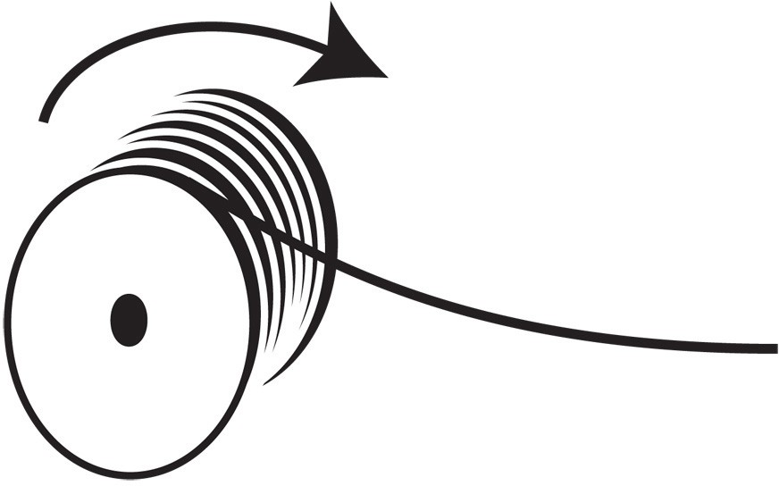
Desenrolle el cable de la bobina en lugar de hacerlo girar desde el extremo de la bobina para evitar que se retuerza con cada vuelta que dé a la bobina. Cuando tienda el cable para un tirón largo, utilice una "figura 8" en el suelo para evitar que se retuerza. La figura 8 introduce media torsión en un lado del 8 y la retira en el otro, evitando así las torsiones.
Instalación de Anillas Giratorias en Cables de Fibra Óptica
Los fabricantes de cables instalan elementos de resistencia especiales, normalmente hilos de aramida (Dupont Kevlar), para tirar de ellos. El cable de fibra óptica sólo debe tirarse por estos elementos de resistencia, a menos que el diseño del cable permita tirar por la cubierta. Cualquier otro método puede ejercer tensión sobre las fibras y dañarlas.
Deben utilizarse anillas de tracción giratorias para fijar la cuerda o cinta de tracción al cable y evitar que éste se retuerza durante la tracción.
Procedimiento para Instalar las Argollas de Tracción Giratorias
Pele la cubierta del cable y corte todas las fibras hasta el final de la cubierta, dejando sólo los elementos de resistencia de aramida.
Separa el hilo de aramida en dos paquetes y pásalos por el ojo giratorio en direcciones opuestas. Haz nudos en cada manojo en el ojo y vuelve a pasar los elementos de resistencia hasta la cubierta del cable. Pegue los elementos de refuerzo a lo largo de la camisa con cinta aislante, hasta la argolla de enganche.
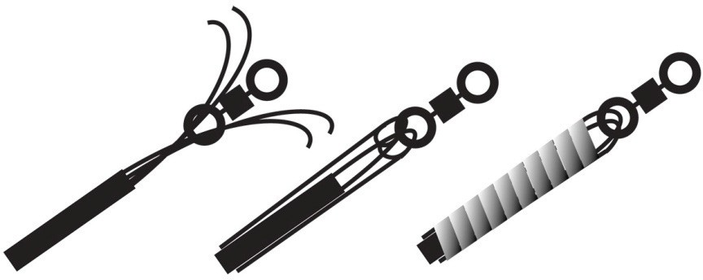
Cable "Figura 8" para tiros intermedios en instalaciones OSP
En tramos OSP muy largos, normalmente de más de 4 kilómetros o 2.5 millas aproximadamente, puede ser necesario utilizar un extractor de fibra automatizado en puntos intermedios para realizar una tracción continua o desde el centro hacia ambos extremos (tracción en medio del tramo). Cuando coloque bucles de fibra en una superficie durante una tracción, utilice bucles de "figura 8" para evitar que el cable se retuerza. La figura 8 introduce media torsión en un lado del 8 y la retira en el otro, evitando así las torsiones.
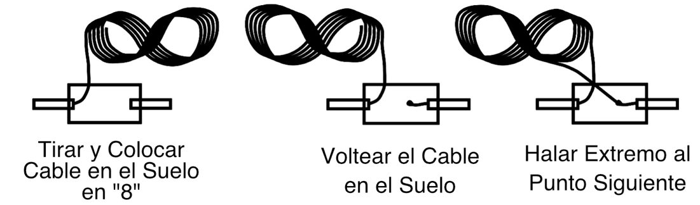
Siga este procedimiento para tirar desde un extremo:
Saque el cable del conducto o conducto interior y colóquelo en el suelo formando un gran "8". El tamaño del "8" vendrá determinado por el tamaño y la rigidez del cable, pero un tamaño habitual es de 2 a 4 metros. El extremo del cable estará pegado al suelo, por lo que puede ser conveniente colocar una lona o una lámina de plástico para mantenerlo limpio. Tira despacio y coloca el cable en forma de 8 para evitar que se doble.
Con la ayuda de varios instaladores, recoja el cable y dele la vuelta para que el extremo que se va a tirar hasta la siguiente ubicación quede arriba.
Sujete el extremo a la cuerda de tracción con las argollas de tracción giratorias adecuadas y continúe la tracción.
Para una tracción a media distancia, utilice estas indicaciones:
Este procedimiento evita tener que dar la vuelta al cable en la Figura 8 del sobre el terreno.
Coloque el carrete de cable en un punto intermedio del tramo largo (asegurándose de que no se supere la distancia máxima de tracción en ninguna dirección).
Tire de un extremo del cable a través del conducto hasta un extremo del tramo.
Desenrolle el cable de la bobina y coloque el cable restante en el suelo. El extremo del cable estará en la parte superior de la figura 8.
Tire del segundo extremo del cable a través del conducto hasta el otro extremo del span.
Radio de Curvatura
No sobrepase el radio de curvatura del cable. El cable de fibra óptica puede romperse si se retuerce o dobla con demasiada fuerza, especialmente al tirar de él. Si no se dispone de las recomendaciones del fabricante del cable, el cable no debe estirarse en un radio de curvatura inferior a veinte (20) veces el diámetro del cable.
Una vez finalizada la tracción, el cable no debe tener ningún radio de curvatura inferior a diez (10) veces el diámetro del cable.
Tendido Vertical de Cables
Siempre que sea posible, deje caer los cables verticales hacia abajo en lugar de tirar de ellos hacia arriba. Sujete los cables a intervalos frecuentes para evitar una tensión excesiva en la cubierta. La sujeción puede realizarse mediante bridas (bien apretadas, pero no tanto como para deformar la cubierta del cable) o pinzas Kellems. Utilice lazos de servicio para ayudar a sujetar el cable y proporcionar cable para futuras reparaciones o desvíos.
Instalación de Cables Soplados
El cable soplado es un método de instalación de cables pequeños en microconductos mediante aire comprimido y una máquina que empuja el cable hacia el interior del conducto. En realidad, los cables no se introducen por soplado en el conducto, sino que el aire soplado hace flotar el cable en el conducto y reduce la fricción para que la máquina pueda empujar el cable dentro del conducto. Este método funciona bien tanto en instalaciones OSP, a menudo con microzanjas para instalar los conductos, como en instalaciones en predios, donde primero se instala el conducto y luego se sopla el cable. Con los microcables actuales, es fácil instalar cables con un elevado número de fibras de este modo, ya que un cable típico de 144 fibras tiene sólo 8 mm (0.3 pulgadas) de diámetro. Incluso se pueden instalar conductos especiales que sólo permiten soplar fibras, no cables, aunque esto no es tan popular.
Instalación de Cables en Predios en Bandejas Portacables
Los cables de fibra óptica suelen instalarse en bandejas de cables en aplicaciones en predios. Las bandejas de cables no deben compartirse con cables de comunicaciones de cobre, ya que su peso puede dañar los cables de fibra. Asimismo, una gran cantidad de cables de fibra en una bandeja puede ejercer demasiada presión sobre los cables de la parte inferior. En aplicaciones donde se utilizan bandejas de cables para cables de comunicaciones de cobre, puede ser posible suspender cables de fibra ligeros por debajo de las bandejas de cables.
Uso de Conductos Internos
Puede ser prudente instalar los cables de fibra óptica críticos de interior dentro de un "conducto interior" de color naranja brillante para facilitar la instalación del cable y protegerlo de daños futuros. El conducto interior de color naranja brillante identificará el cable de fibra óptica ante cualquier trabajador posterior y evitará posibles daños. El coste inicial adicional del conducto interior puede verse compensado por la simplificación de la instalación, que ahorra tiempo al trabajador.
Uso de Amarras o Bridas
Los cables de fibra óptica, como todos los cables de comunicaciones, son sensibles a las cargas de compresión o aplastamiento. Las amarras utilizadas con muchos cables, especialmente cuando se aprietan con una herramienta de instalación, son perjudiciales para los cables de fibra óptica, causando atenuación y posible rotura de la fibra. Cuando se utilicen, las amarras deben apretarse a mano para que queden ajustadas pero lo suficientemente flojas como para poder moverlas a lo largo del cable con la mano. A continuación, debe cortarse el exceso de largo de la brida para evitar que se vuelva a apretar. Las amarras de gancho y bucle son preferibles para los cables de fibra óptica, ya que no pueden aplicar cargas de aplastamiento suficientes para dañar el cable.
Detención de Incendios
Los cables de interior tienen que cumplir la normativa contra incendios y pasar la inspección, por lo que todos los cables que atraviesen una pared cortafuegos tendrán que ser cortafuegos. Todos los cortafuegos de telecomunicaciones deben cumplir los códigos y normas aplicables. Todas las penetraciones deben estar protegidas por cortafuegos homologados. Compuestos cortafuegos y dispositivos se utilizarán siempre que una instalación haya violado una separación contra incendios. En la mayoría de los locales, la ruptura de una separación contra incendios requerirá una vigilancia física hasta que se haya reparado. Consulte con la "autoridad competente" para conocer los requisitos específicos del proyecto antes de iniciar los trabajos.
Conexión a Tierra
Los cables conductores requieren una conexión a tierra y una unión adecuadas para los conductores aplicables. Aunque la mayoría de los cables de fibra óptica no son conductores, todo el hardware metálico utilizado en los sistemas de cableado de fibra óptica (como las cajas de terminación montadas en la pared, los bastidores y los paneles de conexión) debe estar conectado a tierra. Los sistemas de conexión a tierra se diseñarán según lo especificado por el NEC y otros códigos y normas aplicables. La mayoría de las salas de telecomunicaciones disponen de una barra colectora de puesta a tierra que cuenta con una toma de tierra del edificio de alta calidad y conexiones a los dispositivos que requieren conexión a tierra.
Terminación y Empalme
Los procesos de terminación y empalme se tratan en detalle en el capítulo 7. Las terminaciones y empalmes en el campo no tienen requisitos inusuales, salvo la necesidad de encontrar un espacio adecuado libre de polvo y con temperaturas moderadas para trabajar.
Empalmes
El empalme fuera de la planta suele realizarse en un remolque o camión especial para empalmes. Dentro del camión hay un laboratorio de empalmes climatizado con espacio suficiente para trabajar con los cables y los cierres de empalme. A veces, es necesario empalmar al aire libre, en una pequeña tienda o incluso en un cubo aéreo. El instalador tiene que ser capaz de hacer frente a las condiciones que se dan en la instalación. En condiciones de frío extremo, probablemente será necesaria una instalación con calefacción, ya que los cables se vuelven rígidos y el equipo difícil de manejar. Los climas cálidos pueden facilitar los procesos, pero son igualmente incómodos para el instalador.
Lo ideal es comprobar los empalmes con un OTDR en cuanto se realizan y antes de colocarlos en una bandeja de empalmes. Las empalmadoras por fusión dan una estimación de la pérdida por empalme, pero es sólo una estimación. El OTDR puede confirmar la calidad del empalme, dando al instalador la seguridad de que el empalme es bueno y no habrá que volver a abrir el cierre del empalme para rehacer un empalme malo.
Se debe tener sumo cuidado al colocar los empalmes en las bandejas de empalme y al disponer los tubos intermedios o las fibras en el cierre. Un problema que se produce con demasiada frecuencia es que las fibras se rompen al montar las bandejas y el cierre.
Encontrar roturas en fibras dentro del cierre es difícil, ya que están demasiado cerca del empalme para ser resueltas por un OTDR. Si el empalme está lo suficientemente cerca como para permitir el rastreo con un localizador visual de fallos, puede encontrarse con una inspección visual.
Los cables deben fijarse al cierre de empalme y sellarse correctamente. Generalmente los cables de tubo holgado tendrán los tubos que se extienden desde la entrada al cierre hasta la bandeja, donde se aseguran, luego aproximadamente 1 metro de fibras desnudas se organizan en la bandeja después del empalme. Se debe tener cuidado de unir adecuadamente los conductores eléctricos, como la armadura de algunos cables o los miembros de resistencia metálicos centrales, al cierre y en cada extremo.
Los cierres deben fijarse correctamente, determinando su ubicación en función del tipo de instalación, y el cable sobrante debe enrollarse y almacenarse adecuadamente. Puede ser en un pedestal o bóveda, en un poste o torre o enterrado bajo tierra.
Terminación
La terminación, al menos, suele hacerse en el interior de un edificio, cerca de los equipos de comunicaciones, ya sea terminando plantas de cableado exteriores o cables de las instalaciones. El instalador puede seguir teniendo problemas para encontrar el espacio adecuado, por ejemplo, en una sala de telecomunicaciones con filas de paneles de conexión y bastidores de equipos. Es de esperar que el instalador haya previsto bucles de servicio para cada cable que permitan llevar los cables a una zona abierta para su terminación.
Muchos instaladores utilizan mesas plegables portátiles o carros rodantes para crear un espacio de trabajo en el que puedan alcanzar los extremos de los cables.
Si el edificio aún está en construcción, el polvo puede ser un problema. Incluso en los edificios terminados, los sistemas de aire acondicionado pueden arrastrar polvo. Esté atento al polvo y, si es necesario trabajar en un entorno polvoriento, limpie todas las herramientas, la lija de pulido y los conectores tan a menudo como sea necesario.
Si se terminan los cables empalmando coletas en cada fibra, siga las mismas precauciones al colocar los empalmes o las fibras en las bandejas de cables y los cierres para evitar daños. Cuando se terminen fibras con cubierta de 250 micrones con conectores de empalme (SOC) o conectores prepulidos/de empalme, siga las instrucciones del fabricante sobre cómo manipular las fibras desnudas y proteja las fibras con tubos de furcación si así se recomienda. Para la terminación directa de fibras multimodo con cubierta apretada de 900 micrones en un cable de distribución, deje una distancia adecuada para almacenar los tramos de fibra sobrantes. Con todas las terminaciones, tenga cuidado de evitar curvas cerradas que puedan causar problemas de pérdida o fallo de la fibra en el futuro.
Al igual que los empalmes, cada conector debe comprobarse una vez finalizada la terminación de la fibra. Inspeccione cada conector pulido con un microscopio para asegurarse de que el pulido se ha realizado correctamente. Si es posible, compruebe cada conector prepulido/empalmado con un localizador visual de fallos. Una vez terminados ambos extremos de una fibra, debe comprobarse y documentarse la pérdida de extremo a extremo inmediatamente después de terminar. Los conectores con pérdidas elevadas deben volver a terminarse y se ahorrará tiempo si se hace mientras el instalador está en el lugar.
Etiquetado y Documentación
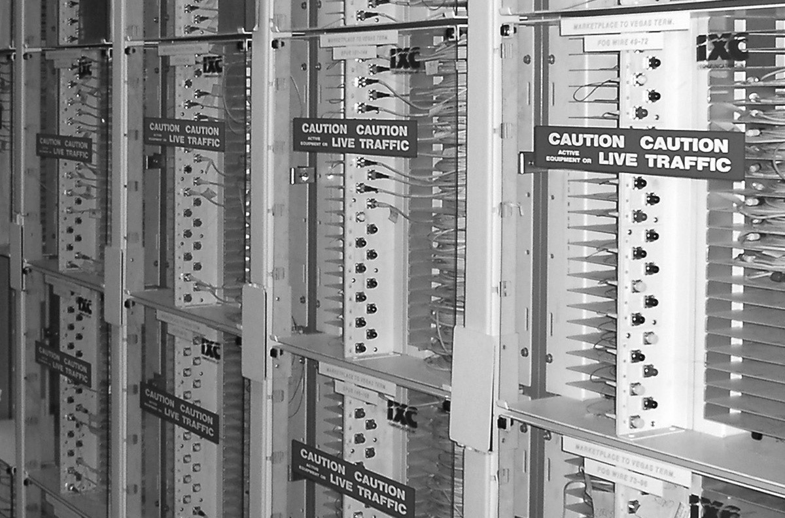
Normalmente es el instalador que termina el cable el que tiene la tarea de etiquetar cada punto de terminación. En el mejor de los casos, la etiqueta se ha creado como parte del diseño de la planta de cableado y el instalador sólo tiene que hacer coincidir los códigos de color de las fibras con la etiqueta y, si no está ya colocada, pegar la etiqueta en el panel de conexiones en el lugar adecuado. Se trata de un proceso importante, ya que la designación de cada fibra se utilizará para registrar los datos de las pruebas, la conexión a los equipos y su seguimiento durante posteriores traslados, adiciones y cambios. Las puertas de los paneles de conexión deben estar marcadas en cuanto a su uso e incluir advertencias sobre la entrada autorizada.
Limpieza del Lugar de Trabajo
Después de terminar o empalmar los cables, el instalador debe limpiar cuidadosamente el lugar de trabajo y dejarlo al menos tan limpio como lo encontró, preferiblemente más limpio. Deben retirarse del lugar todos los desechos, especialmente los de fibra, que deben sellarse en recipientes desechables.
Ahorro de Componentes Sobrantes
Los componentes sobrantes deben guardarse para su uso futuro, especialmente en restauraciones. Los conectores y cables pueden guardarse junto con la documentación de la planta de cableado, de modo que cualquier restauración futura disponga de componentes compatibles para empalmar o terminar cables.
Pruebas de la Planta de Cable de Fibra Óptica Instalada
Durante la fase de diseño, cada tramo de cable debe tener un cálculo de pérdidas basado en las especificaciones de los componentes. Tras la instalación, es necesario probar cada fibra de todos los cables de fibra óptica para verificar que la instalación es correcta, comparando la pérdida medida con la pérdida calculada a partir del cálculo de pérdidas.
Normalmente, el instalador realizará las siguientes pruebas:
Pruebas de continuidad para determinar que el encaminamiento de la fibra y/o la polarización es correcta y la documentación es adecuada.
Pérdida de inserción de extremo a extremo utilizando un medidor de potencia OLTS y una fuente. Pruebe los cables multimodo utilizando el método B de la TIA/EIA 526-14 y los cables monomodo utilizando la TIA/EIA 526-7, a menos que la compatibilidad conector-equipo de prueba requiera otro método de referencia. La pérdida total debe ser inferior a la pérdida máxima calculada para el cable basándose en los cálculos del balance de pérdidas utilizando las normas apropiadas o las especificaciones del cliente. Si las pruebas muestran variaciones con respecto a las pérdidas previstas, solucione los problemas y corríjalos.
Las pruebas OTDR opcionales pueden utilizarse para verificar la instalación del cable y el rendimiento del empalme. Sin embargo, las pruebas OTDR no se utilizarán para determinar la pérdida del cable. El uso de un OTDR en aplicaciones de predios puede resultar inadecuado si los cables son cortos. Un técnico experimentado en OTDR deberá determinar la idoneidad del uso.
Si la documentación de diseño no incluye la longitud de la planta del cable, y ésta no se registra durante la instalación, lea la longitud a partir de las marcas de distancia de las cubiertas del cable o compruebe la longitud de la fibra utilizando la función de longitud disponible en un OTDR o en algunos OLTS.
Pruebas de Continuidad
Realice pruebas de continuidad de las fibras ópticas utilizando un trazador visual de fibras, un localizador visual de fallos o un medidor y fuente de potencia OLTS. Rastree la fibra de extremo a extremo a través de cualquier interconexión para asegurarse de que la ruta está correctamente instalada, y de que la polarización y el enrutamiento son correctos y están documentados.
Pérdida de Inserción
La pérdida de inserción se refiere a la pérdida óptica de las fibras instaladas cuando se mide con una fuente de prueba y un medidor de potencia (OLTS). Pruebe los cables multimodo utilizando TIA/EIA 526-14, preferiblemente el método B (pero documente siempre el método utilizado), y los cables monomodo utilizando TIA/EIA 526-7 (monomodo).
Pruebe la fibra multimodo a 850 y 1300 nm, y la fibra monomodo a 1310 y 1550 nm, a menos que otras normas o requisitos del cliente exijan lo contrario.
Pruebe los cables de prueba de referencia antes de la prueba para verificar su calidad y límpielos a menudo.
El cableado destinado a ser utilizado con sistemas de alta velocidad que utilicen fuentes láser podrá probarse con fuentes láser adecuadas para garantizar que las pruebas verifican el rendimiento con ese tipo
de la fuente.
Pruebas OTDR
El reflectómetro óptico en el dominio del tiempo (OTDR) utiliza técnicas similares a las del radar óptico para crear una imagen de una fibra en un cable de fibra óptica instalado. La imagen, denominada firma o traza, contiene datos sobre la distancia de la fibra, la pérdida en segmentos de fibra, conectores, empalmes y la pérdida causada por la tensión durante la instalación. Los OTDR se utilizan para verificar la calidad de la instalación o para solucionar problemas. Sin embargo, las pruebas OTDR no se utilizarán para determinar la pérdida de cable.
Los OTDR tienen una resolución de distancia limitada y pueden mostrar artefactos confusos al probar cables cortos típicos de las aplicaciones de predios. Si se desea realizar pruebas OTDR de cables cortos para predios, el personal experimentado debe evaluar la idoneidad de las pruebas.
Las pruebas OTDR sólo deben ser realizadas por personal cualificado, utilizando equipos certificados diseñados para tal fin. Los técnicos que realicen las pruebas deben estar formados no sólo en el manejo del equipo OTDR, sino también en la interpretación de las trazas OTDR.
Administración, Gestión, y Documentación
La documentación de la planta de cables de fibra óptica es una parte integral del proceso de diseño, instalación y mantenimiento de la red de fibra óptica. Documentar la instalación adecuadamente facilitará la instalación, permitirá una mejor planificación de actualizaciones, además de simplificar las pruebas y futuros traslados, adiciones y cambios.
A menos que el usuario especifique lo contrario, la documentación de la planta de cables de fibra óptica debe seguir la norma ANSI/TIA/EIA-606, norma de administración para la infraestructura de telecomunicaciones de edificios comerciales.
Los cables de fibra óptica, especialmente los utilizados para cables troncales, pueden contener muchas fibras que conectan una serie de enlaces diferentes que van a varias ubicaciones distintas con interconexiones en paneles de conexión o cierres de empalme. La planta de cables de fibra óptica debe estar documentada en cuanto a la ruta exacta que sigue cada fibra de cada cable, incluidas las conexiones intermedias y cada tipo de conector. La documentación también debe incluir datos de pérdida de inserción y trazas OTDR opcionales.
Preguntas de Repaso
Verdadero/Falso
Indique si la afirmación es verdadera o falsa.
______ 1. Las aplicaciones industriales suelen utilizar la fibra óptica por su inmunidad al ruido más que por sus ventajas en cuanto a distancia y ancho de banda.
______ 2. Todos los componentes metálicos del sistema de cableado instalados en una sala de equipos o telecomunicaciones deben estar conectados a tierra.
______ 3. Al renovar los cables en un armario de telecomunicaciones, los cables viejos y abandonados pueden cortarse hasta la pared y dejarse en su sitio, siempre que no se altere el sellado contra incendios.
Elección Múltiple
Identifique la opción que mejor complete el enunciado o responda a la pregunta.
______ 4. _____________ facilitará la instalación, permitirá una mejor planificación de actualizaciones y simplificar las pruebas.
- Buena mano de obra
- Conectores de bajas pérdidas
- Procedimientos seguros en el lugar de trabajo
- Documentación adecuada
______ 5. El cableado de la planta exterior puede instalarse mediante _____________.
- Introducción subterránea en conducto
- Entierro directo
- Suspensión aérea
- Todos los anteriores
______ 6. El equipo de protección que todo instalador de VDV (video, datos, voz)debe llevar siempre es _____________.
- Protección ocular
- Delantal de plástico
- Guantes
- Cubrezapatos
______ 7. La varilla de fibra de vidrio del interior de muchos cables de fibra óptica sirve para _____________.
- Aumento de la tensión de tracción
- Limitar el radio de curvatura para evitar dobleces
- Enrollar las fibras
- Atar a cables mensajeros
______ 8. Para evitar que el cable se retuerza al tirar de él ________.
- Utilice un ojo giratorio
- Tira con cuerda trenzada
- Saca el cable de la bobina
- Lubricar el cable
______ 9. En tiradas largas, en puntos intermedios, ¿por qué se tiende el cable en forma de "8"?
- Evita que se enrede con la cuerda de tracción
- Facilita la pulverización del lubricante
- Evite que los trabajadores lo pisen
- Evitar que se retuerza
______ 10. Cuando la fibra esté bajo tensión de tracción, el radio de curvatura no debe ser inferior a _____________.
- 5 veces el diámetro del cable
- 10 veces el diámetro del cable
- 20 veces el diámetro del cable
- 50 veces el diámetro del cable
______ 11. La norma industrial que cubre el cableado estructurado, tanto de fibra como de cobre, es _____________.
- TIA-568
- TIA-526-14
- IEEE 802.3
- NECA-301
______ 12. El cableado estructurado instalado según las normas TIA-568 utiliza una arquitectura de cableado.
- Bús
- Anillo
- Estrella
- Árbol
______ 13. Los tendidos verticales de cables deben instalarse preferentemente por medio de _____________.
- Tirar despacio y con cuidado con la mano
- Máquinas de tracción calibradas
- Tirar de un piso cada vez
- Dejar caer desde arriba en lugar de tirar hacia arriba
______ 14. Bridas/amarras utilizadas en cables de fibra óptica __________.
- Deben apretarse firmemente para evitar el movimiento del cable
- Pueden utilizarse para colgar cables en ganchos "J" o bandejas de cables
- Deben estar dimensionados para el peso de los cables
- Pueden dañar los cables si se aprietan demasiado, por lo que deben apretarse a mano
Estudios y Proyectos Adicionales
La Norma de Instalación de Fibra Óptica FOA/NECA 301, cubre de forma concisa las directrices para la instalación.
Como parte de un laboratorio, construya un enlace completo de fibra óptica utilizando componentes típicos de los utilizados en aplicaciones del mundo real. Incluya el tendido o la colocación de cables, terminaciones y empalmes.
Busque artículos sobre aplicaciones de fibra óptica y revise cómo se desarrollan y ejecutan los proyectos.
Busque sitios web de fabricantes de equipos de instalación y revise sus
vídeos o instrucciones promocionales.